1 Analyzing and Modeling Spatial Point Pattern Data
“Programming is the art of doing one thing at a time” — Michael Feathers
We naturally tend to assign order to things. We seek patterns in a collection of events. Stars in the night sky as constellations.
One pattern that tends to catch our attention is the spatial grouping of events. Groups of events in a particular region trigger us to look for an explanation. Why do events occur more often in this particular region?
1.1 Kansas tornadoes as point pattern data
We motivate the study of point pattern data further by examining Kansas tornadoes. Let the genesis of a tornado be an event location and the maximum EF rating provide a mark for the event. We consider only events with marks of 1, 2, 3, 4, and 5.
Import the data.
## Linking to GEOS 3.7.2, GDAL 2.4.2, PROJ 5.2.0##
## Attaching package: 'dplyr'## The following objects are masked from 'package:stats':
##
## filter, lag## The following objects are masked from 'package:base':
##
## intersect, setdiff, setequal, union## Reading layer `1950-2018-torn-initpoint' from data source `/Users/jelsner/Desktop/Projects/ASSFG-Book/1950-2018-torn-initpoint' using driver `ESRI Shapefile'
## Simple feature collection with 63645 features and 22 fields
## geometry type: POINT
## dimension: XY
## bbox: xmin: -163.53 ymin: 18.13 xmax: -64.9 ymax: 61.02
## CRS: 4326Then create a map using the functions in the {tmap} package. The state border is obtained as a simple feature data frame. The polygon geometry is plotted first with tm_borders() then the event locations are plotted with the tm_bubbles() and size = "mag".
library(tmap)
library(USAboundaries)
KS.sf <- us_states(states = "Kansas")
tm_shape(KS.sf) +
tm_borders(col = "grey70") +
tm_shape(Torn.sf) +
tm_bubbles(size = "mag",
col = "red",
alpha = .4,
title.size = "EF Rating") +
tm_layout(legend.position = c("left", "top"),
legend.outside = TRUE)
For comparison we create a map using the functions in the {ggplot2} package. We use geom_sf() with county borders as a simple feature data frame and then adding another geom_sf() with the tornado genesis as a simple feature and the size aesthetic set to the EF rating.
library(ggplot2)
ggplot() +
geom_sf(data = KS.sf,
fill = "gray90") +
geom_sf(data = Torn.sf,
aes(size = mag),
alpha = .4,
show.legend = FALSE) +
coord_sf(crs = 4326) +
theme_minimal()
Based on this display of tornado genesis locations as spatial events we ask: (1) Are certain areas of the state more likely to get a tornado? (2) Do tornadoes tend to cluster? (3) Are there places in the state that are safe from tornadoes?
These questions are similar but not identical. We explore these canonical questions about point pattern data in the next few lessons.
1.2 Definitions
We need some definitions to get started.
- Event: An occurrence of interest (e.g., tornado, accident, wildfire).
- Event location: Location of event (e.g., genesis latitude/longitude).
- Point: Any location in the study area where an event could occur. Note: Event location is a particular point where an event did occur.
- Point pattern data: A collection of observed (or simulated) event locations and a spatial domain of interest.
- Domain: Defined by data availability (e.g., state or county boundary) or by the extent of the events.
Complete spatial randomness (CSR; not to be confused with CRS–coordinate reference system) defines the situation where an event has an equal chance of occurring at any point in the domain regardless of other nearby events. In this case we say they event locations have a uniform probability distribution (uniformly distributed) across space. Note: uniform chance does not necessarily mean that the events have an ordered pattern (e.g., trees in an orchard). Some parts of the domain may get lucky (or unlucky).
Consider a set of event locations that are randomly but uniformly distributed within the unit plane.
x <- runif(n = 50, min = 0, max = 1)
y <- runif(n = 50, min = 0, max = 1)
df1 <- data.frame(x, y, name = "Point Pattern 1")
ggplot(df1, aes(x, y)) +
geom_point(size = 2)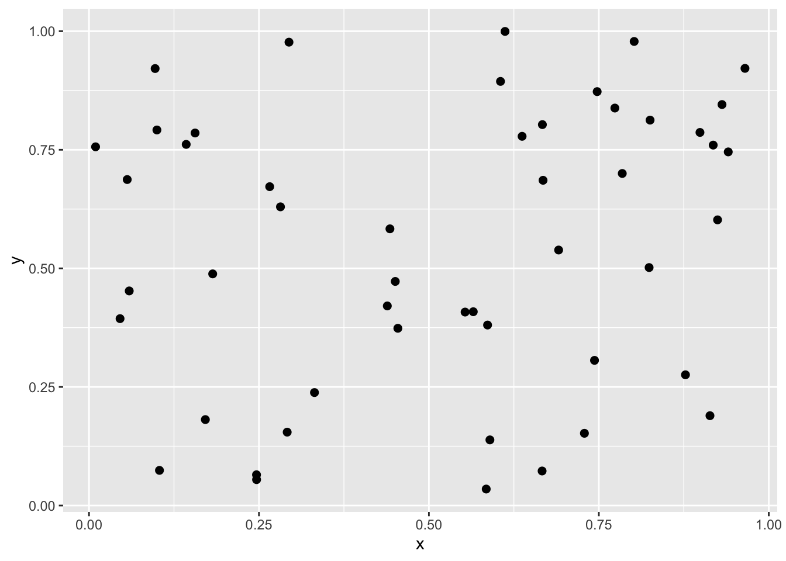
This is one realization (sample) from a spatial point pattern process. A spatial point process is a mechanism for producing a set of event locations across space. The pattern of locations produced by the point process is described as CSR. There are groups of event locations and some gaps.
Let’s repeat to create a set of four realizations. Here we concatenate them into a single data frame with the rbind() function and then plot a four-panel figure using the facet_wrap() function.
df2 <- data.frame(x = runif(n = 30, min = 0, max = 1),
y = runif(n = 30, min = 0, max = 1),
name = "Point Pattern 2")
df3 <- data.frame(x = runif(n = 30, min = 0, max = 1),
y = runif(n = 30, min = 0, max = 1),
name = "Point Pattern 3")
df4 <- data.frame(x = runif(n = 30, min = 0, max = 1),
y = runif(n = 30, min = 0, max = 1),
name = "Point Pattern 4")
df <- rbind(df1, df2, df3, df4)
ggplot(df, aes(x, y)) +
geom_point() +
facet_wrap(~ name)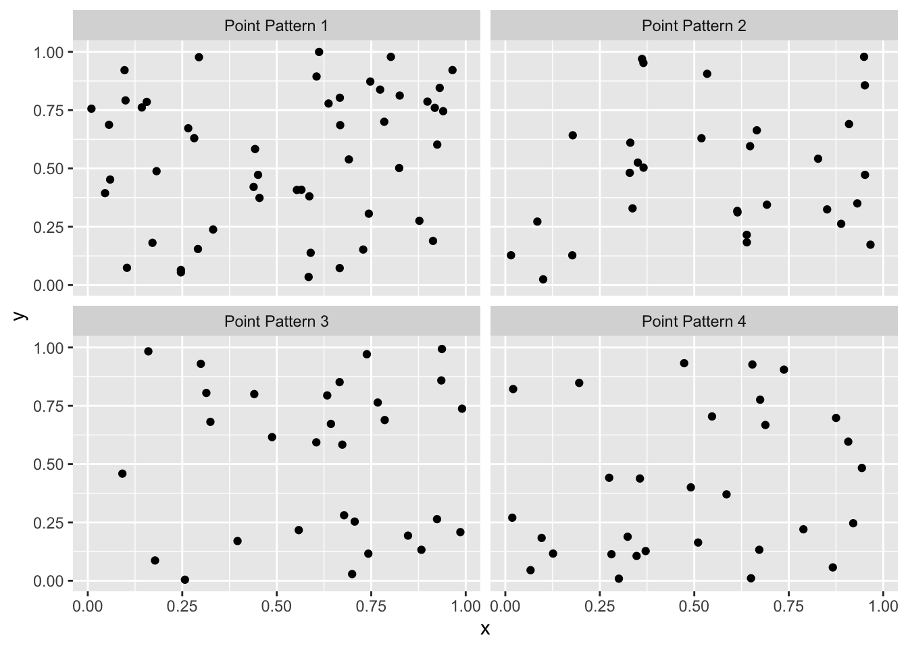
Groups of nearby events illustrate that a certain degree of clustering occurs by chance (without cause) making visual assessment of clustering difficult.
Patterns of event locations that are described as completely spatially random are patterns that sit between event locations that are described as clustered and event locations that are described as ‘regular’.
To illustrate this idea we generate point pattern data that are more regular than CSR and point pattern data that are more clustered than CSR. Event locations are generated using the rMaternI() and rMaternClust() functions from the {spatstat} package. More about these later.
## Loading required package: spatstat.data## Loading required package: nlme##
## Attaching package: 'nlme'## The following object is masked from 'package:dplyr':
##
## collapse## Loading required package: rpart##
## spatstat 1.63-3 (nickname: 'Wet paint')
## For an introduction to spatstat, type 'beginner'##
## Attaching package: 'spatstat'## The following object is masked from 'package:base':
##
## marginSumsm1 <- rMaternI(kappa = 100, r = .02)
df1 <- data.frame(x = m1$x, y = m1$y, name = "Regular Pattern 1")
m2 <- rMaternI(kappa = 100, r = .02)
df2 <- data.frame(x = m2$x, y = m2$y, name = "Regular Pattern 2")
m3 <- rMatClust(kappa = 30, r = .15, mu = 4)
df3 <- data.frame(x = m3$x, y = m3$y, name = "Cluster Pattern 1")
m4 <- rMatClust(kappa = 30, r = .15, mu = 4)
df4 <- data.frame(x = m4$x, y = m4$y, name = "Cluster Pattern 2")
df <- rbind(df1, df2, df3, df4)
ggplot(df, aes(x, y)) +
geom_point() +
facet_wrap(~ name)
The difference in the arrangement of event locations between a regular and a cluster process is a bit more clear. But the difference between CSR and either of them is usually not.
And spatial scale matters. A set of event locations can be regular on a small scale but clustered on a larger scale.
Probability models for spatial patterns motivate methods for detecting event clustering. A probability model generates a stochastic process.
For example, we can think of crime as a stochastic process defined by location and influenced by environmental factors. The probability of a crime occurring at a particular location is the random variable and we can estimate the probability of a crime event at any location given factors that influence crime.
A spatial point process is a stochastic process where event location is the random variable. A realization of the process is a collection of events generated under the probability model. The theory of spatial point processes is developed by Ripley (1981), Diggle (1983), and Cressie (1993).
The theory requires a few more definitions.
1.2.1 Stationarity and isotropy
A spatial point process is said to be stationary if the statistical properties of the events are invariant to translation across the domain. This means that the relationship between two events depends only on the relative event locations (not on where the events occur in the domain). Relative location (or spatial lag) refers to distance and orientation.
In the case where the statistical properties do not depend on the orientation of event pairs the process is said to be isotropic.
Stationarity and isotropy allow for replication within a data set. Under the assumption that the point pattern is generated from a stationary process, two event pairs that are separated by the same distance should have the same relatedness. This is analogous to the assumption we make when we define our weights matrix for spatially aggregated data. The assumptions of stationarity and isotropy are starting points for modeling point pattern data.
1.2.2 Spatial Poisson process
The Poisson distribution defines a simple model for complete spatial randomness (CSR). A point process is said to be ‘homogeneous Poisson’ under the following two criteria:
- The number of events, N, occurring within a finite domain A is a random variable described by a Poisson distribution with mean \(\lambda\)|A| for some positive constant \(\lambda\), with |A| denoting the area of the domain, and
- The locations of the N events represent a random sample where each point in A is equally likely to be chosen as an event location.
The first criteria of a Poisson distribution refers to a probability model describing the number of events. It expresses the probability of a given number of events occurring in a fixed interval of space when the events occur with a known constant rate.
The Poisson parameter defines the intensity of the point process. Given a set of events, an estimate for the mean (rate) parameter of the Poisson distribution is given by the number of events divided by the domain area.
The second criteria ensures the events are scattered about the domain without clustering or regularity.
The procedure to create a homogeneous Poisson point process follows directly from its definition. Step 1: Sample the total number of events from a Poisson distribution with a mean that is proportional to the domain area. Step 2: Place each event within the domain with coordinates given by a uniform distribution.
For example, let area |A| = 1, and the rate of occurrence \(\lambda\) = 20, then
lambda <- 20
N <- rpois(1, lambda)
x <- runif(N)
y <- runif(N)
df <- data.frame(x, y)
ggplot(df, aes(x, y)) +
geom_point(size = 2) 
The set of events represents a realization (sample) from a homogeneous Poisson point process. The intensity of the events is specified first then the locations are placed uniformly inside the domain. The domain need not be regular. The actual number of events varies from one realization to the next.
By construction this point pattern is CSR. However, we are typically in the opposite position. We observe a set of events and we want to know if the events are regular or clustered. Our null hypothesis is CSR and we need a test statistic that will guide our inference. The null models are simple so we can use Monte Carlo methods to generate many realizations.
1.2.3 Heterogeneous Poisson process
In many cases the homogeneous Poisson model as the null hypothesis is not restrictive enough. This means that we can easily reject the null hypothesis but not learn anything interesting about our data. For example, often with health events (locations of people with heart disease) CSR is not an appropriate model because a null hypothesis that incidences are equally likely does not consider that people cluster (locations at risk are not uniform).
Each person has the same risk of heart disease regardless of location, and we expect more cases in areas with more people at risk. Clusters of cases in high population areas violate the CSR but not necessarily the constant risk hypothesis. The constant risk hypothesis requires the intensity of the spatial process be defined as a spatially varying function. That is, we define the intensity as \(\lambda(s)\), where \(s\) denotes location.
The intensity (density) function is a first-order property of the random process. If intensity varies (significantly) across the domain the process is said to be heterogeneous. The intensity function describes the expected number of events at any location of the region. Events might be independent of one another, but groups of events appear because of the changing intensity.
1.3 Point pattern objects in the {spatstat} package
We will use functions from the {spatstat} package to analyze and model point pattern data. Point pattern data are represented in {spatstat} by an object of class ppp (for planar point pattern) which contains the coordinates of the events, optional values attached to the events (called ‘marks’), and a description of the domain or ‘window’ over which the events are observed. See ?ppp.object() for details.
Spatial statistics computed on a ppp object will be somewhat sensitive to the choice of the window (domain), so some thought should go into deciding what it should be.
As an example, the data swedishpines is available in the package as a ppp object.
## [1] "ppp"## Planar point pattern: 71 points
## window: rectangle = [0, 96] x [0, 100] units (one unit = 0.1 metres)The data is a planar point pattern object with 71 events. Caution: Unfortunately called the events are called ‘points’ because as was explained above, the theory was developed using the definition that a point represented a potential event not necessarily an actual event location.
All the events are contained within a rectangle window of size 9.6 by 10 meters.
There is a plot() method for ppp objects that provides an easy way to view the data and the window.

Events are plotted as open circles inside a window. The plot is labeled with the name of the ppp object.
The function convexhull() creates a convex hull around the events. Here we add the convex hull to our plot.
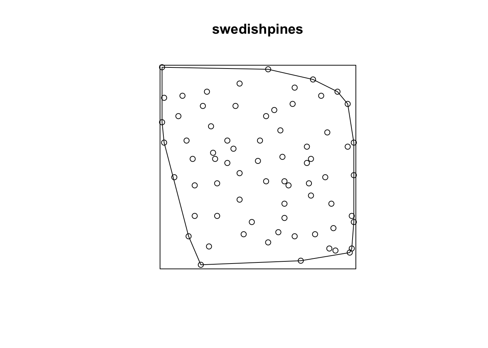
Recall that the hull defines the minimum area convex polygon that contains all the events.
The domain (window) for analysis and modeling should be somewhat larger than the convex hull. The function ripras() computes a spatial domain based on the event locations alone assuming the locations are independent and identically distributed. Here we add this polygon to our plot.
plot(swedishpines)
plot(convexhull(swedishpines),
add = TRUE)
plot(ripras(swedishpines),
add = TRUE, lty = "dotted")
The window can have an arbitrary shape. A rectangle, a polygon, a collection of polygons including holes, or a binary image (mask). A window can be stored as a separate object of class owin. See ?owin.object() for details.
Each event may carry information called a ‘mark’. A mark can be continuous (e.g. tree height) or discrete (tree species).
A multitype point pattern is one in which the events are marked using a factor (e.g., tree species). The mark values are given in a vector of the same length as the vector of locations. That is, marks[i] is the mark attached to the point (x[i], y[i]).
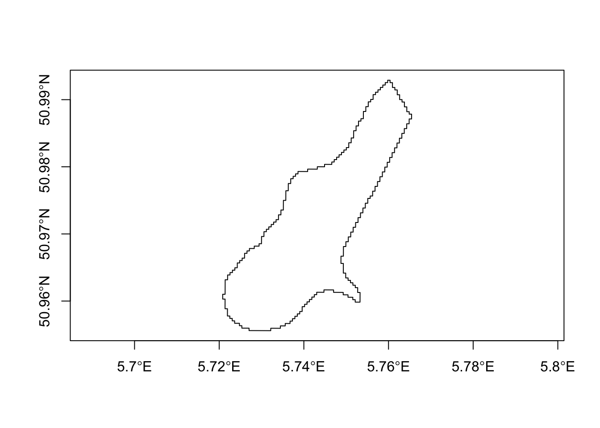
## [1] A B B A B B B A A A B A A B B A A A B B A A A A B B B A A B B B B B A A B
## [38] A A B B A A B B B B A B B B B B B B A A A B A B A B B B B B A B B A A B B
## [75] B B B A B B A A B A B B B A B A B B B B B A A B A B B B B B A A A B A B B
## [112] A
## Levels: A BHere the domain is defined as an irregular concave polygon with a hole. The distinction between inside and outside is important for all spatial statistics computed using the events.
For a multitype pattern (where the marks are factors) we use the split() function to separate the point pattern objects by mark type. Consider the Lansing Woods data set (lansing) with marks corresponding to tree species.

1.4 Spatial varying intensity
Given a set of events, how do we estimate the intensity function? Quadrat counting is a simple way. The spatial domain is divided into a grid of rectangular cells and the number of events in each cell is counted.
Quadrat counting is done with the quadratcount() function.
## x
## y [0,19.2) [19.2,38.4) [38.4,57.6) [57.6,76.8) [76.8,96]
## [80,100] 3 1 2 3 3
## [60,80) 4 4 3 1 2
## [40,60) 3 5 3 7 3
## [20,40) 1 1 2 3 3
## [0,20) 1 2 2 4 5The default divides the data into a 5 x 5 grid. The event count in each grid cell is produced.
To change the default number of cells in x and y directions we use the nx = and ny = arguments.
## x
## y [0,48) [48,96]
## [66.7,100] 10 11
## [33.3,66.7) 14 14
## [0,33.3) 7 15We can plot the quadrat counts with the plot method.

Note that the cell areas will not be equal when the domain boundaries are irregular.

When the number of events is large, hexagon cells are useful. The process is: (1) tessellate the domain by a regular grid of hexagons, (2) count the number of events in each hexagon, and (3) use a color ramp to display the events per hexagon.
Here we generate 20K random values from the standard normal distribution for the x coordinate and repeat for the y coordinate. We then use the hexbin() function from the {hexbin} package and specify 10 bins in the x direction to count the number of events in each hexagon and assign the result to the object hbin.
## Formal class 'hexbin' [package "hexbin"] with 16 slots
## ..@ cell : int [1:90] 4 5 6 14 15 16 17 18 19 24 ...
## ..@ count : int [1:90] 1 2 4 5 13 20 16 5 3 1 ...
## ..@ xcm : num [1:90] -1.3108 -0.752 -0.0365 -2.14 -1.1957 ...
## ..@ ycm : num [1:90] -3.64 -3.66 -3.49 -2.76 -2.9 ...
## ..@ xbins : num 10
## ..@ shape : num 1
## ..@ xbnds : num [1:2] -4.12 4.06
## ..@ ybnds : num [1:2] -3.7 4.42
## ..@ dimen : num [1:2] 14 11
## ..@ n : int 20000
## ..@ ncells: int 90
## ..@ call : language hexbin(x = x, y = y, xbins = 10)
## ..@ xlab : chr "x"
## ..@ ylab : chr "y"
## ..@ cID : NULL
## ..@ cAtt : int(0)The package uses S4 data classes so the output is stored in slots.
There is a plot method.

Hexagons have symmetric nearest neighbors (there is only rook contiguity). They have the most sides of any polygon that can tessellate the plane. They are generally more efficient than rectangles at covering the events. In other words it takes fewer of them to cover the same number of events. They are visually less biased for displaying densities compared to squares/rectangles.
As another example, generate a large number of random events in the two-dimensional plane. Use a normal distribution in the x-direction and a student t-distribution in the y-direction.

The {ggplot2} package has the stat_binhex() function so that also can be used for display.

1.4.1 Kernel density
Another way to quantify the spatial intensity of the process is with kernel density. A kernel density estimator is a smoothing function that gives the average number of events at any location in the domain.
Here we generate 100 events uniformly on the real number line between 0 and 1. The kernel density estimator is applied using different bandwidths.
e <- runif(100)
dd1 <- density(e, bw = .025)
dd2 <- density(e, bw = .05)
dd3 <- density(e, bw = .1)
df <- data.frame(x = c(dd1$x, dd2$x, dd3$x),
y = c(dd1$y, dd2$y, dd3$y),
bw = c(rep("Bandwidth = .025", 512),
rep("Bandwidth = .05", 512),
rep("Bandwidth = .1", 512)))
df2 <- data.frame(x = e, y = 0)
ggplot(df, aes(x, y)) +
geom_line() +
facet_wrap(~ bw, nrow = 3) +
geom_point(aes(x, y), data = df2, color = "red")
As the bandwidth increases the curve indicated by the black line becomes smoother. The density is estimated at every location on the number line, not just at the location of the event.
The density is a summation of the kernels with one kernel centered on top of each event location. Event locations are marked with a point along the x-axis and the kernel is a Gaussian (normal) density. It is placed on each event and the bandwidth specifies the distance between the inflection points of the kernel. The one-dimensional density estimate extends to two (or more) dimensions.
1.4.2 Example 1: Tropical trees
The object bei is a planar point pattern object with the locations of 3605 trees in a tropical rain forest. The data are part of the {spatstat} package.

The point pattern data is accompanied by a data set (bei.extra) of elevation (elev) and slope of elevation (grad) across the region.
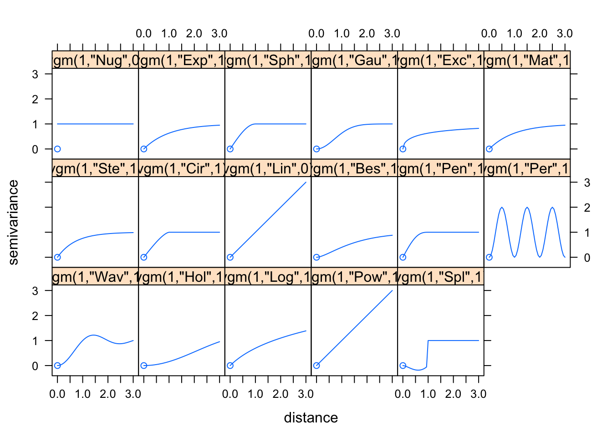
These data are given as im (image) objects in a list format.
## [1] "im"An image object contains a list with 10 elements including the matrix of values (v).
## List of 10
## $ v : num [1:101, 1:201] 121 121 121 121 121 ...
## $ dim : int [1:2] 101 201
## $ xrange: num [1:2] -2.5 1002.5
## $ yrange: num [1:2] -2.5 502.5
## $ xstep : num 5
## $ ystep : num 5
## $ xcol : num [1:201] 0 5 10 15 20 25 30 35 40 45 ...
## $ yrow : num [1:101] 0 5 10 15 20 25 30 35 40 45 ...
## $ type : chr "real"
## $ units :List of 3
## ..$ singular : chr "metre"
## ..$ plural : chr "metres"
## ..$ multiplier: num 1
## ..- attr(*, "class")= chr "unitname"
## - attr(*, "class")= chr "im"The window focuses the analysis on a particular region. Suppose you want to model locations of a certain tree type but only for trees located at elevations above 145 meters. The levelset() function creates a window from an image object as follows:
## [1] "owin"The result is an object of class owin. The plot method displays the window which is the region in black.
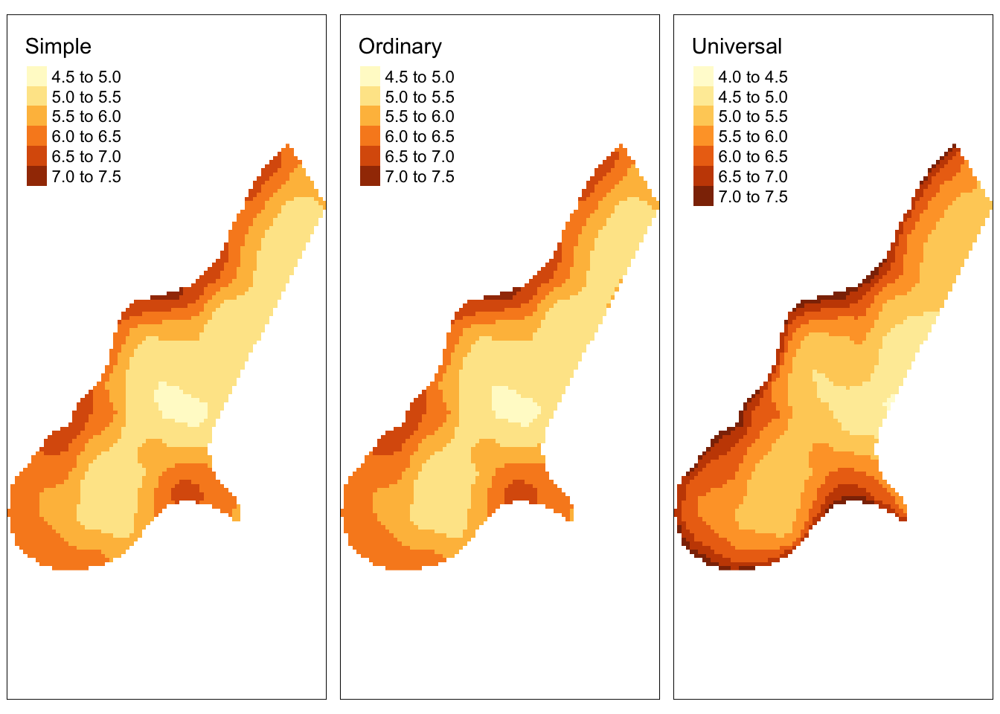
We subset the point pattern data by the window using the bracket operator ([]) as we do with a data frame.
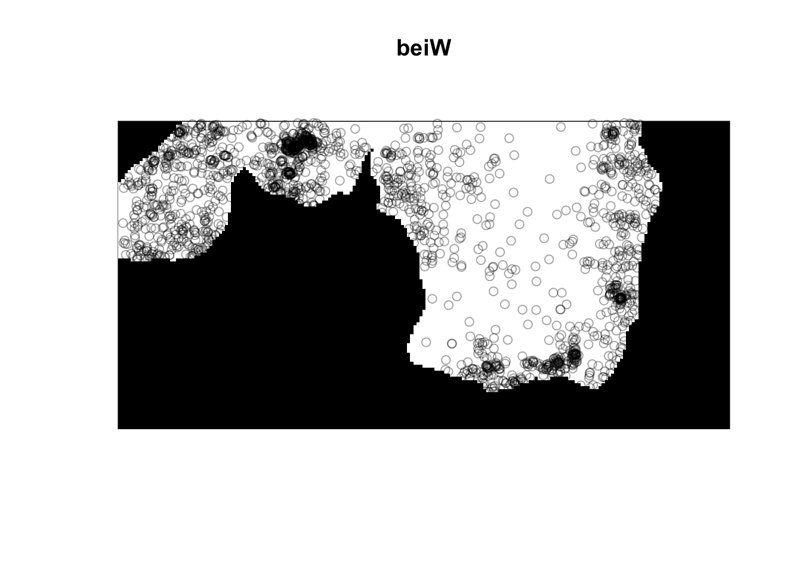
Now the analysis window is white and the event locations are plotted on top.
As another example we create a window where altitude is lower than 145 m and slope exceeds .1 degrees. In this case we use the solutionset() function.
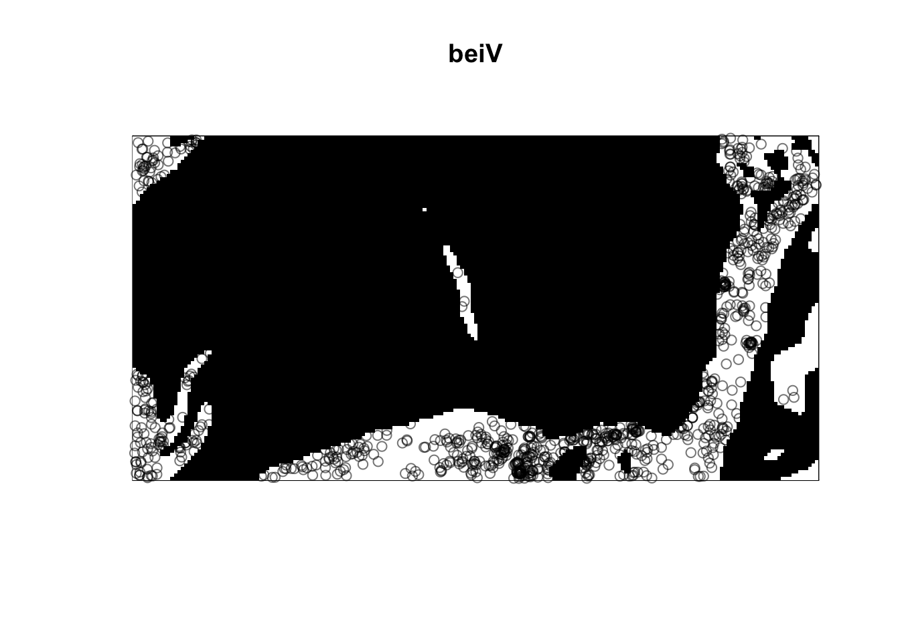
We compute the spatial intensity over the domain with the density() method using the default Gaussian kernel and fixed bandwidth determined by the window size.
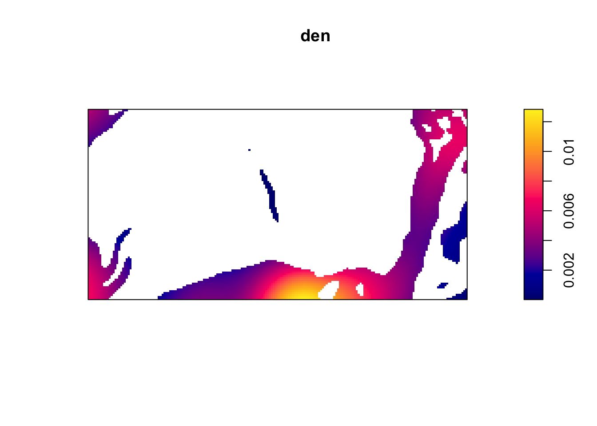
The units of intensity are events per unit area (here square meters). The intensity values are computed on a grid (\(v\)) and are returned as a pixel image.
## [1] 16020There are over 16K of the cells that have a value of NA.
1.4.3 Example 2: Kansas tornadoes
Let’s return to the Kansas tornadoes. One of the first issues I encountered in the field of tornado climatology was reporting ‘bias’.
Here we are interested in the intensity of tornado genesis locations in Kansas. Import the data as a simple features data frame and transform the geographic CRS to a web Mercator.
We did this to start the class but here we get all the tornadoes.
library(sf)
library(dplyr)
Torn.sf <- st_read(dsn = "1950-2018-torn-initpoint") %>%
st_transform(crs = 3857) %>%
filter(st == "KS", mag >= 0) %>%
mutate(EF = as.factor(mag)) %>%
dplyr::select(EF)## Reading layer `1950-2018-torn-initpoint' from data source `/Users/jelsner/Desktop/Projects/ASSFG-Book/1950-2018-torn-initpoint' using driver `ESRI Shapefile'
## Simple feature collection with 63645 features and 22 fields
## geometry type: POINT
## dimension: XY
## bbox: xmin: -163.53 ymin: 18.13 xmax: -64.9 ymax: 61.02
## CRS: 4326Plot them.

Q: What is wrong?
Instead of filtering by column name we should subset by geometry. We saw how to do this in Lesson 6 with the st_contains() (st_intersection()) function. Here since we are using the functions in the {spatstat} package we do this by defining the window.
Import the data again, this time keeping all the events with an EF rating. Here we project the geographic CRS to a Lambert conic conformal centered on Kansas (EPSG:6922).
Torn.sf <- st_read(dsn = "1950-2018-torn-initpoint") %>%
st_transform(crs = 6922) %>%
filter(mag >= 0) %>%
mutate(EF = as.factor(mag)) %>%
dplyr::select(EF)## Reading layer `1950-2018-torn-initpoint' from data source `/Users/jelsner/Desktop/Projects/ASSFG-Book/1950-2018-torn-initpoint' using driver `ESRI Shapefile'
## Simple feature collection with 63645 features and 22 fields
## geometry type: POINT
## dimension: XY
## bbox: xmin: -163.53 ymin: 18.13 xmax: -64.9 ymax: 61.02
## CRS: 4326Next create a spatial window as an owin object. We first obtain the Kansas border as a simple feature data frame from the {USAboundaries} package and transform the CRS to that of the tornadoes. We then convert the simple feature object to an S4 SpatialPolygons object before converting it to an owin object with the as.owin() function. Make sure functions from the {maptools} package are available to the current session.
## Loading required package: sp## Checking rgeos availability: TRUEKS.sf <- us_states(states = "Kansas") %>%
st_transform(crs = st_crs(Torn.sf))
KS.sp <- as(KS.sf, "Spatial")
KS.win <- as(KS.sp, 'owin')Next convert the tornado simple feature data frame to a ppp object with the EF rating as the marks. Again we need to first convert to an S4 class spatial object.

Finally subset the event locations by the Kansas border using the subset operator ([]).

Rescale the units from meters to kilometers. Recall that the spatial unit is given in the CRS of the simple feature.
## Marked planar point pattern: 4234 points
## Average intensity 0.01986229 points per square km
##
## *Pattern contains duplicated points*
##
## Coordinates are given to 5 decimal places
##
## Multitype:
## frequency proportion intensity
## 0 2512 0.593292400 1.178414e-02
## 1 1044 0.246575300 4.897550e-03
## 2 449 0.106046300 2.106322e-03
## 3 185 0.043693910 8.678609e-04
## 4 38 0.008974965 1.782633e-04
## 5 6 0.001417100 2.814684e-05
##
## Window: polygonal boundary
## single connected closed polygon with 170 vertices
## enclosing rectangle: [62.4467, 723.2754] x [110.7986, 451.0722] km
## (660.8 x 340.3 km)
## Window area = 213168 square km
## Unit of length: 1 km
## Fraction of frame area: 0.948Caution here about recycling names. If we rerun the above code chunk the scale will change again!
There are 4234 tornado reports with an average intensity of .02 tornadoes per square km over this time period. Nearly 60% of all Kansas tornadoes have been EF0. Only about 1% of tornadoes in Kansas have been ‘violent’ (EF4 or EF5). The area of the state is 213,168 square km.
We plot the events by magnitude using the plot() method together with the split() function.

The number of events varies across the state (see EF4 events for example) but it’s difficult to say whether this is due to sampling variation.
To illustrate this here we compare the EF1 tornado locations with a sample of events generated under the null hypothesis of CSR.
We first create Y as an unmarked ppp object of our tornadoes. We do this by subsetting on the marks and using the unmark() function. The spatial intensity of the EF1 tornado events is obtained from the summary() method. Make a plot to check if things look correct.
## Planar point pattern: 1044 points
## Average intensity 0.00489755 points per square km
##
## *Pattern contains duplicated points*
##
## Coordinates are given to 5 decimal places
##
## Window: polygonal boundary
## single connected closed polygon with 170 vertices
## enclosing rectangle: [62.4467, 723.2754] x [110.7986, 451.0722] km
## (660.8 x 340.3 km)
## Window area = 213168 square km
## Unit of length: 1 km
## Fraction of frame area: 0.948
There are 1044 EF1 tornadoes over the state.
Let X be a set of events generated from a homogeneous Poisson process (a model for CSR). Let the intensity of the events be equal to that of the data. Here we use the rpoispp() function to generate the event locations and we set lambda equal to the intensity of the object Y using the same window as Y.
## [1] 0.00493977
There appears to be some difference.
The superimpose() function is used to create a single ppp object with marks Y and X.
## Warning: data contain duplicated points
The range of local intensity variations is similar. So we don’t have much evidence against the null model of CSR as defined by a homogeneous Poisson process.
1.4.4 Tornado reports as a function of distance from nearest town
We know that tornado reports are more common near cities and towns. This is especially true in the earlier years of the record. This knowledge is available from the literature on tornadoes (not from the data). It is a well-known artifact of the data set, but it had never been quantified until we did it in 2013 http://myweb.fsu.edu/jelsner/PDF/Research/ElsnerMichaelsScheitlinElsner2013.pdf.
Here we estimate the intensity as a function of distance from nearest town.
Import the spatial data frame of city locations. Set and convert the CRS. Filter to exclude cities with fewer than 1000 people.
download.file("http://myweb.fsu.edu/jelsner/temp/data/ci08au12.zip",
"ci08au12.zip")
unzip("ci08au12.zip")
C.sf <- st_read(dsn = ".",
layer = "ci08au12",
quiet = TRUE) %>%
st_set_crs(4326) %>%
st_transform(crs = st_crs(Torn.sf)) %>%
filter(POP_1990 >= 1000)Or instead from the {USAboundariesData} package.
C.sf <- USAboundaries::us_cities() %>%
filter(population >= 1000) %>%
st_transform(crs = st_crs(Torn.sf))## City populations for contemporary data come from the 2010 census.Create a ppp object of events from the city/town locations given in the SpatialPointsDataFrame. Remove the marks and include only events inside the window object (KS.own). Convert the spatial units from meters to kilometers.
C.sp <- as(C.sf, "Spatial")
C.ppp <- as(C.sp, "ppp")
C.ppp <- unmark(C.ppp[KS.win])
C.ppp <- spatstat::rescale(C.ppp,
s = 1000,
unitname = "km")
plot(C.ppp)
Next we compute a ‘distance map’. A distance map of a set of events A is the function f whose value f(x) is defined for any point x as the shortest distance from x to any event in A.
This is done with the distmap() function and the points are the intersections of a 128 x 128 regular grid (default).

The result is an object of class image (im). Distances are in kilometers. Distance-to-nearest town can be used to quantify the population bias in the tornado data.
Other distance functions include pairdist(), which is the pairwise distance between all event pairs and crossdist(), which is the distance between events from two point patterns. The nndist() computes the distance between an event and its nearest neighbor event.
Compute a smoothed estimate of the tornado report intensity as a function of distance to nearest city with the rhohat() method. The method assumes the events are a realization from a Poisson process with intensity function \(\lambda(u)\) of the form
\[
\lambda(u) = \rho[Z(u)]
\]
where \(Z\) is the spatial explanatory variable (covariate) function (with continuous values) and \(\rho(z)\) is a function to be estimated.
The function rhohat() estimates the relationship between the point process intensity and a given spatial explanatory variable. Such a relationship is sometimes called a ‘resource selection’ function (if the events are organisms and the variable is a descriptor of habitat) or a ‘prospectivity index’ (if the events are mineral deposits and the variable is a geological variable).
The function does not assume a particular form for the relationship between the point pattern and the variable (thus it is said to be ‘non-parametric’).
The first argument in rhohat() is the ppp object for which we want the intensity estimate and the second argument is the spatial variable (covariate), here as object of class im. By default, smoothing is done using kernel density.
With method = "transform" the smoothing method is variable-bandwidth kernel smoothing, implemented by applying the Probability Integral Transform to the covariate values, yielding values in the range 0 to 1, then applying edge-corrected density estimation on the interval [0, 1], and back-transforming. The adjust = argument increases the amount of smoothing when it’s greater than one.
The resulting object (rhat) has three classes including a data frame. The data frame contains the explanatory variable as a single vector (Zc), an estimate of the intensity at the distances (rho), the variance (var) and upper (hi) and lower (lo) uncertainty values (point-wise).
## Zc rho var hi lo
## 1 0.1416211 0.006697845 1.440303e-07 0.007441678 0.005954013
## 2 0.3409340 0.006690796 1.433002e-07 0.007432740 0.005948851
## 3 0.5402469 0.006683400 1.425395e-07 0.007423373 0.005943427
## 4 0.7395597 0.006675695 1.417479e-07 0.007413610 0.005937779
## 5 0.9388726 0.006667569 1.409187e-07 0.007403323 0.005931816
## 6 1.1381855 0.006659109 1.400608e-07 0.007392620 0.005925598Here we put these into a new data frame (df) multiplying the intensities by 10,000 (so units are in 100 sq. km) then use ggplot() method with a geom_ribbon() layer for the uncertainty band.
df <- data.frame(dist = rhat$Zc,
rho = rhat$rho * 10000,
hi = rhat$hi * 10000,
lo = rhat$lo * 10000)
ggplot(df) +
geom_ribbon(aes(x = dist, ymin = lo , ymax = hi), alpha = .3) +
geom_line(aes(x = dist, y = rho), color = "red") +
geom_hline(yintercept = 49, color = "blue") +
scale_y_continuous(limits = c(0, 100)) +
ylab("Tornado Reports (EF1) per 100 sq. km") +
xlab("Distance from Nearest Town Center (km)") +
theme_minimal()
The vertical axis is the tornado report intensity in units of number per 100 square kilometer. Intensity is greatest nearest to towns as anticipated.
Compare the functional intensity with the statewide rate of 1044/213168 = .0049 (or 49 tornadoes per 100 sq. km). At zero distance from a town, this number is more than 1.5 times higher (76 tornadoes per 100 sq. km). At distances greater than 30 km from the nearest town the tornado report rate is about 36 tornadoes per 100 sq. km.
The 95% uncertainty band is shown in gray.
The spatial scale is about 10 km (distance along the spatial axis where the red line falls below the blue line).
At this point in our analysis we need to think. The plot look reasonable based on our expectations of a population bias in the tornado reports, but could this result be an artifact of the smoothing algorithm? This is where critical thinking comes in.
We need to know how to apply statistical tools to accomplish specific tasks. But we also need to question the legitimacy of the results from the tool. This allows us to interpret results in a critical and analytical fashion.
For example, the method should give us a different answer on events that are randomly generated. What would you expect to find?
We’ve already generated a set of events from a homogeneous Poisson model so we can check simply by applying the rhohat() function to these events using the same set of city/town locations.
rhat0 <- rhohat(X,
covariate = Zc,
adjust = 2,
method = "transform")
df <- data.frame(dist = rhat0$Zc,
rho = rhat0$rho * 10000,
hi = rhat0$hi * 10000,
lo = rhat0$lo * 10000)
ggplot(df) +
geom_ribbon(aes(x = dist, ymin = lo , ymax = hi), alpha = .3) +
geom_line(aes(x = dist, y = rho), color = "red") +
geom_hline(yintercept = 49, color = "blue") +
scale_y_continuous(limits = c(0, 100)) +
ylab("Tornado Reports (EF1) per 100 sq. km") +
xlab("Distance from Nearest Town Center (km)") +
theme_minimal()
The difference between the two point pattern data sets can be explained by the clustering of reports in the vicinity of towns.
1.4.5 Challenge problem: Tornado reports as a function of distance to nearest city/town
Repeat for another state of your choice. (1) Determine the average EF1+ (EF1 or more damaging) tornado intensity per square kilometer over the state during the period 1950-2017. (2) Plot the spatial varying intensity of these tornadoes using (a) quadrats (10 x 10) and (b) a kernel density smoother. (3) Plot the spatial intensity as a smoothed function of distance to nearest town or city (with populations exceeding 500). Is there a significant population bias in tornado reports? If so, what is the spatial scale of this bias?
1.5 Conditional probability
1.5.1 Texas tornadoes
Consider EF1 or worse tornadoes occurring over the state of Texas. The EPSG code is for a Texas centric Lambert conic conformal.
library(sf)
library(dplyr)
library(spatstat)
library(maptools)
Torn.sf <- st_read(dsn = "1950-2018-torn-initpoint") %>%
st_transform(crs = 3082) %>%
dplyr::filter(mag >= 0) %>%
dplyr::mutate(EF = as.factor(mag)) %>%
dplyr::select(EF)## Reading layer `1950-2018-torn-initpoint' from data source `/Users/jelsner/Desktop/Projects/ASSFG-Book/1950-2018-torn-initpoint' using driver `ESRI Shapefile'
## Simple feature collection with 63645 features and 22 fields
## geometry type: POINT
## dimension: XY
## bbox: xmin: -163.53 ymin: 18.13 xmax: -64.9 ymax: 61.02
## CRS: 4326Create the spatial domain (called a ‘window’ in the {spatstat} parlance) over which the analysis will be done. Here we use the state border of Texas as a simple feature data frame from the USAboundaries package.
We transform the CRS accordingly and convert the simple feature object to an S4 SpatialPolygons object before converting it to an owin object with the as.owin() function. We then subset the tornado events by the owin object.
library(USAboundaries)
W.sf <- us_states(states = "Texas") %>%
st_transform(crs = st_crs(Torn.sf))
W.sp <- as(W.sf, "Spatial")
W <- as(W.sp, 'owin')
T.ppp <- T.ppp[W]
summary(T.ppp)## Marked planar point pattern: 8736 points
## Average intensity 1.264744e-08 points per square unit
##
## *Pattern contains duplicated points*
##
## Coordinates are given to 1 decimal place
## i.e. rounded to the nearest multiple of 0.1 units
##
## Multitype:
## frequency proportion intensity
## 0 4674 0.5350275000 6.766725e-09
## 1 2495 0.2855998000 3.612105e-09
## 2 1199 0.1372482000 1.735837e-09
## 3 314 0.0359432200 4.545896e-10
## 4 48 0.0054945050 6.949140e-11
## 5 6 0.0006868132 8.686426e-12
##
## Window: polygonal boundary
## single connected closed polygon with 555 vertices
## enclosing rectangle: [873763.8, 2116649.8] x [5881245, 7063086] units
## (1243000 x 1182000 units)
## Window area = 6.90733e+11 square units
## Fraction of frame area: 0.47There are 8,736 Texas tornadoes of which 368 are EF3+ on the damage-rating scale.
The spatial unit is one meter. The average intensity is 1.2647e-08 (.000000012647) events per square meter. There are 1e+09 (1 million) square meters in a square kilometer so this works out to 12.6 tornadoes per square kilometer over this 69-year period (1950-2018).
Next we plot the spatial varying intensity using a kernel smoother.

It is clear from this map that the averge spatial intensity of 12.6 tornadoes per square km is too high in southwestern parts of the state and too low in the northern parts. Recall from Lesson 13 that there was not much a spatial trend in tornadoes across Kansas.
Next we compute and plot the spatial intensity as a smoothed function of distance to nearest town or city.
We start by removing the marks on the tornado events.
Then we use of the spatial data frame of city locations. Import the data, set the CRS, and transform the CRS to match that of the tornadoes. Exclude cities with fewer than 3000 people.
download.file("http://myweb.fsu.edu/jelsner/temp/data/ci08au12.zip",
"ci08au12.zip")
unzip("ci08au12.zip")
C.sf <- st_read(dsn = ".",
layer = "ci08au12",
quiet = TRUE) %>%
st_set_crs(4326) %>%
st_transform(crs = st_crs(Torn.sf)) %>%
dplyr::filter(POP_1990 >= 3000)Then create a ppp object of events from the city/town locations. First create an S4 class spatial data frame and convert this data frame to a ppp object before removing the marks. Then subset the events by the window.

Next create a distance map of the city/town locations using the distmap() function.

The resulting object an im class indicating a pixeled image. Pixel values are distances is meters. Blue indicates locations that are less than 20 km from a city or town with a population of at least 3000.
Finally we compute the spatial varying intensity of tornadoes as a smoothed function of distance to nearest town/city with the rhohat() function. We then prepare the output and make a plot.
library(ggplot2)
rhat <- rhohat(Tum.ppp,
covariate = Zc,
adjust = 1.3,
method = "transform")
data.frame(dist = rhat$Zc / 1000,
rho = rhat$rho * 10^9,
hi = rhat$hi * 10^9,
lo = rhat$lo * 10^9) %>%
ggplot() +
geom_ribbon(aes(x = dist, ymin = lo , ymax = hi), alpha = .3) +
geom_line(aes(x = dist, y = rho), color = "red") +
scale_y_continuous(limits = c(0, NA)) +
geom_hline(yintercept = summary(Tum.ppp)$intensity * 10^9, color = "blue") +
ylab("Tornado Reports per sq. km") +
xlab("Distance from Nearest Town Center (km)") +
theme_minimal()
We see that tornado reports are higher than the overall mean in the vicinity of towns and cities.
However this result is confounded by the trend we saw above. The increasing trend of tornadoes moving from southwest to northeast across the state mirrors the trend in the occurrence of cities/towns.
We can quantify this effect by using a function as the covariate. Here we specify a plane with x,y as arguments and x + y inside the function.

The spatial varying tornado event intensity increases nonlinearly along the functional axis labeled X starting at a value of 7,400,000. At value of X equal to about 8,200,000 the spatial intensity stops increasing.
Units along the horizontal axis are meters but the reference (intercept) distance is at the far left. So we interpret the increase in spatial intensity going from southwest to northeast as a change across about 800 km (8200000 - 7400000)/1000).
The spatial varying intensity of cities has the same property (increasing from southwest to northeast then leveling off).

So the population bias towards more reports near towns/cities is confounded by the fact that there tends to be more cities and towns in areas that have conditions more favorable for tornadoes.
Thus we can only get so far by examining intensity estimates if our interest lies in inferring the cause of spatial variation in the intensity. We will need to look at second order properties of the events.
1.5.2 Conditional probability
Even if we can’t use a map showing the spatial varying intensity of event to make inferences about causes, combining such maps allow us to map estimates of relative risks of events. More generally the relative risk is a conditional probability.
For example given a tornado occurring in Texas what is the chance that it will cause EF3 or worse damage? How can we answer that? For the state as a whole we have the answer from our summary of the ppp object.
## Marked planar point pattern: 8736 points
## Average intensity 1.264744e-08 points per square unit
##
## *Pattern contains duplicated points*
##
## Coordinates are given to 1 decimal place
## i.e. rounded to the nearest multiple of 0.1 units
##
## Multitype:
## frequency proportion intensity
## 0 4674 0.5350275000 6.766725e-09
## 1 2495 0.2855998000 3.612105e-09
## 2 1199 0.1372482000 1.735837e-09
## 3 314 0.0359432200 4.545896e-10
## 4 48 0.0054945050 6.949140e-11
## 5 6 0.0006868132 8.686426e-12
##
## Window: polygonal boundary
## single connected closed polygon with 555 vertices
## enclosing rectangle: [873763.8, 2116649.8] x [5881245, 7063086] units
## (1243000 x 1182000 units)
## Window area = 6.90733e+11 square units
## Fraction of frame area: 0.47The chance that a tornado anywhere in Texas will be at least EF3 or worse is the sum of the proportions for these types: .03594 + .00549 + .00069 = .042 (or 4.2%). Or the sum of the intensities for these types divided by the overall intensity (1.264744e-08).
But as we saw the intensity varies spatially.
We create two ppp objects the first one being the set of all tornado locations with damage ratings 0, 1, or 2 and the other the set of all tornado locations with damage ratings 3, 4, or 5.
First we split the object then merge them and assign names as marks.
H.ppp <- unmark(T.ppp[T.ppp$marks == 2 | T.ppp$marks == 1 | T.ppp$marks == 0])
I.ppp <- unmark(T.ppp[T.ppp$marks == 3 | T.ppp$marks == 4 | T.ppp$marks == 5])
T2.ppp <- superimpose(H = H.ppp, I = I.ppp)## Warning: data contain duplicated pointsThe probability that a tornado picked at random is intense (EF3+) is 4%. Plot touchdown locations for the set of intense tornadoes.

To obtain the relative risk we use the relrisk() function. If X is a bivariate point pattern (a multitype point pattern consisting of two types of events) then by default, the events of the first type (the first level of marks(X)) are treated as controls or non-events, and events of the second type are treated as cases.
Then the function relrisk() computes the spatially-varying probability of a case, (i.e. the probability \(p(u)\) that a point at location \(u\) will be a case). If relative = TRUE, it computes the spatially-varying relative risk of a case relative to a control, \(r(u) = p(u)/(1 - p(u))\).
Here we compute the relative risk on a 128 by 128 grid. It takes a few seconds.
## Warning: Likelihood Cross-Validation criterion was optimised at right-hand
## end of interval [273, 130000]; use arguments 'hmin', 'hmax' to specify a wider
## interval for bandwidth 'sigma'The result is again an object of class im (a pixel object with values we can interpret as the conditional probability of an ‘intense’ tornado, see https://en.wikipedia.org/wiki/Enhanced_Fujita_scale).
We retrieve the range of probabilities with the range() function. Note that many of the values are NA corresponding pixels that are outside the window so we set na.rm = TRUE.
## [1] 0.007785304 0.061021803The probabilities range from a low of .77% to a high of 6.1%.
County borders from the {map} package (automatically installed with {ggplot2}). It provides maps of the USA, with state and county borders, that can be retrieved and converted as sf objects.
library(maps)
TX.sf <- map("county", regions = "Texas", plot = FALSE, fill = TRUE) %>%
st_as_sf() %>%
st_buffer(dist = 0)## Warning in st_buffer.sfc(st_geometry(x), dist, nQuadSegs, endCapStyle =
## endCapStyle, : st_buffer does not correctly buffer longitude/latitude data## dist is assumed to be in decimal degrees (arc_degrees).Create a map. To facilitate plotting the results we convert the resulting im object to a raster and set the CRS accordingly.
##
## Attaching package: 'raster'## The following objects are masked from 'package:spatstat':
##
## area, rotate, shift## The following object is masked from 'package:nlme':
##
## getData## The following object is masked from 'package:dplyr':
##
## selectrr.r <- raster(rr)
crs(rr.r) <- st_crs(Torn.sf)$proj4string
library(tmap)
tm_shape(rr.r) +
tm_raster(title = "Probability") +
tm_shape(TX.sf) +
tm_borders(col = "gray70") +
tm_layout(frame = FALSE) +
tm_credits(text = "Chance that a random tornado\ndoes at least EF3 damage",
size = 1,
position = c("left", "bottom")) 
It is of considerable interest to extract these probabilities for specific cities.
Here we use the data frame us.cities from the {map} package has a list of US cities with population greater than about 40,000. Also included are state capitals of any population size.
Cities.sf <- st_as_sf(us.cities,
coords = c("long", "lat"),
crs = 4326) %>%
st_transform(crs = st_crs(Torn.sf)) %>%
dplyr::filter(country.etc == "TX")We use the extract() function from the raster package to get a single value for each city. We put these values into the simple feature data frame.
## Simple feature collection with 71 features and 5 fields
## geometry type: POINT
## dimension: XY
## bbox: xmin: 892089.1 ymin: 5891060 xmax: 2084881 ymax: 6916236
## CRS: EPSG:3082
## First 10 features:
## name country.etc pop capital rr geometry
## 1 Longview TX TX 76372 0 0.06049421 POINT (1991211 6629569)
## 2 Tyler TX TX 92155 0 0.05930445 POINT (1941518 6606280)
## 3 MacKinney TX TX 108976 0 0.05715841 POINT (1811823 6697921)
## 4 Rowlett TX TX 57174 0 0.05706093 POINT (1822132 6666114)
## 5 Allen TX TX 84467 0 0.05699254 POINT (1810262 6687903)
## 6 Mesquite TX TX 132746 0 0.05675272 POINT (1817942 6650477)
## 7 Richardson TX TX 107481 0 0.05666746 POINT (1806999 6672297)
## 8 Frisco TX TX 80192 0 0.05661100 POINT (1797126 6690838)
## 9 Garland TX TX 217609 0 0.05650525 POINT (1814664 6665883)
## 10 Plano TX TX 260415 0 0.05643495 POINT (1803006 6681041)To put the finishing touch on this analysis we create a chart using the geom_lollipop() function from the ggalt package.
## Registered S3 methods overwritten by 'ggalt':
## method from
## grid.draw.absoluteGrob ggplot2
## grobHeight.absoluteGrob ggplot2
## grobWidth.absoluteGrob ggplot2
## grobX.absoluteGrob ggplot2
## grobY.absoluteGrob ggplot2##
## Attaching package: 'scales'## The following object is masked from 'package:spatstat':
##
## rescaleCities.sf <- Cities.sf %>%
dplyr::filter(rr > .042)
ggplot(Cities.sf, aes(x = reorder(name, rr), y = rr)) +
geom_lollipop(point.colour = "steelblue", point.size = 3) +
scale_y_continuous(labels = percent) +
coord_flip() +
labs(x = "", y = NULL,
title = "Chance that a random tornado will do at least EF3 damage",
subtitle = "Cities in Texas with a 2010 population > 40,000",
caption = "Data from SPC") +
theme_minimal()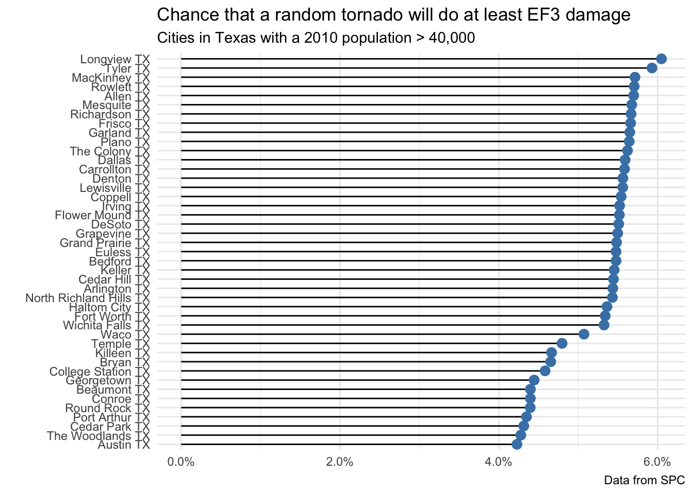
1.5.3 Another example: Given a wildfire anywhere in Florida what is the probability is was started by lightning?
The spatial wildfire occurrence data for the United States, 1992-2015 [FPA_FOD_20170508]. Data publication contains GIS data (Karen C. Short). It is available here: https://www.fs.usda.gov/rds/archive/catalog/RDS-2013-0009.4.
I download the GPKG data. GeoPackage is an open, standards-based, platform-independent, portable, self-describing, compact format for transferring geospatial information. Of the 8 million or so wildfires in the U.S. over the period 1992-2015 I extracted those occurring in Florida and saved it as a ESRI Shapefile.
library(sf)
unzip("RDS-2013-0009.4_GPKG.zip")
st_layers(dsn = "Data/FPA_FOD_20170508.gpkg")
Fires.sf <- st_read(dsn = "Data/FPA_FOD_20170508.gpkg",
layer = "Fires")
library(dplyr)
FL_Fires.sf <- Fires.sf %>%
filter(STATE == "FL") %>%
st_transform(crs = 3857)
st_write(FL_Fires.sf,
dsn = "FL_Fires",
driver = "ESRI Shapefile")
zip(files = "FL_Fires",
zipfile = "FL_Fires.zip")We import the Florida wildfire data as a simple feature data frame.
## Reading layer `FL_Fires' from data source `/Users/jelsner/Desktop/Projects/ASSFG-Book/FL_Fires' using driver `ESRI Shapefile'
## Simple feature collection with 90261 features and 37 fields
## geometry type: POINT
## dimension: XY
## bbox: xmin: -9750382 ymin: 2824449 xmax: -8908899 ymax: 3632749
## proj4string: +proj=merc +lon_0=0 +lat_ts=0 +x_0=0 +y_0=0 +a=6378137 +b=6378137 +units=m +no_defs## [1] 90261 38There are over 90K events in Florida. To make things run faster here we analyze a random sample of the events. We first create a random sample of 1000 row numbers and assign the row numbers to the vector index. We then subset the FL_Fires.sf sf data frame by this index.
set.seed(78732)
index <- sample(nrow(FL_Fires.sf), size = 1000)
FL_FiresS.sf <- FL_Fires.sf[index, ]
dim(FL_FiresS.sf)## [1] 1000 38We then convert the event set to a ppp object over a window defined by the state boundaries as we’ve done before.
FL_FiresS.sp <- as(FL_FiresS.sf, "Spatial")
Fires.ppp <- as(FL_FiresS.sp["STAT_CAU_1"], "ppp")
W.sf <- us_states(states = "Florida") %>%
st_transform(crs = st_crs(FL_Fires.sf))
W.sp <- as(W.sf, "Spatial")
W <- as(W.sp, 'owin')
Fires.ppp <- Fires.ppp[W]
summary(Fires.ppp)## Marked planar point pattern: 1000 points
## Average intensity 4.976646e-09 points per square unit
##
## *Pattern contains duplicated points*
##
## Coordinates are given to 1 decimal place
## i.e. rounded to the nearest multiple of 0.1 units
##
## marks are of type 'character'
## Summary:
## Length Class Mode
## 1000 character character
##
## Window: polygonal boundary
## 4 separate polygons (no holes)
## vertices area relative.area
## polygon 1 15 9.79340e+08 0.004870
## polygon 2 5 1.33445e+08 0.000664
## polygon 3 5 9.06224e+07 0.000451
## polygon 4 356 1.99735e+11 0.994000
## enclosing rectangle: [-9755477, -8909135] x [2814226, 3632839] units
## (846300 x 818600 units)
## Window area = 2.00939e+11 square units
## Fraction of frame area: 0.29The probability that a wildfire picked at random is caused by lightning is about 25% (proportion column of the frequency versus type table). How does this probability vary over the state?
First we split the object then merge them and assign names as marks.
L.ppp <- unmark(Fires.ppp[Fires.ppp$marks == "Lightning"])
NL.ppp <- unmark(Fires.ppp[Fires.ppp$marks != "Lightning"])
LNL.ppp <- superimpose(NL = NL.ppp, L = L.ppp)## Warning: data contain duplicated pointsThe function relrisk() computes the spatially-varying probability of a case, (i.e. the probability \(p(u)\) that a point at location \(u\) will be a case).
Here we compute the relative risk on a 256 by 256 grid.
We map the raster as before first converting the image object to a raster object and assigning the CRS. We add the county borders for reference.
wfr.r <- raster(wfr)
crs(wfr.r) <- st_crs(FL_Fires.sf)$proj4string
FL.sf <- map("county", regions = "Florida", plot = FALSE, fill = TRUE) %>%
st_as_sf()
tm_shape(wfr.r) +
tm_raster(title = "Probability") +
tm_shape(FL.sf) +
tm_borders(col = "gray70") +
tm_legend(position = c("left", "bottom") ) +
tm_credits(text = "Chance that a random wildfire\nwas caused by lightning",
position = c("left", "bottom")) 
1.6 Clustering through interaction
The first-order spatial intensity function describes the distribution on a scale across the domain (trend and/or covariate terms). Clustering is a second-order property of point pattern data. It answers the question: is the probability of an event in the proximity of another event higher than expected by chance?
What physical processes can you think of where this question might be relevant?
Let \(r\) be the distance between two events or the distance between an event and an arbitrary point within the domain of a spatial point pattern data set, then functions to describe clustering are:
The nearest neighbor distance function \(G(r)\) : The cumulative distribution of the distances from an event to the nearest other event (event-to-event function). It summarizes the distances between nearest neighbors.
The empty space function \(F(r)\) : The cumulative distribution of the distances from a point in the domain to the nearest event (point-to-event function). It summarizes the distance gaps between events (lacunarity–amount of gappiness).
The reduced second moment function (Ripley’s \(K\)) \(K(r)\) : Defined such that \(\lambda \times K(r)\) is the expected number of additional events within a distance \(r\) of an event, where \(\lambda\) is the average intensity of the events. It is a measure of the spatial autocorrelation among the events.
To help evaluate clustering estimates of \(G\), \(F\), and \(K\) computed on point pattern data (empirical estimates) are compared to theoretical curves assuming a homogeneous Poisson process. These theoretical curves are well defined for homogeneous point patterns (CSR–complete spatial randomness). A deviation of the empirical estimate from the theoretical curve is evidence against CSR.
The theoretical functions assuming a homogeneous Poisson process are:
\(K(r) = \pi r^2\) \(F(r) = G(r) = 1 - \exp(-\lambda \pi r^2)\)
Where \(\lambda\) is the spatial intensity.
Recall the Swedish pine saplings data from the spatstat package.
## [1] "ppp"Here we first assign the data to an object called SP. We then compute the nearest neighbor distance function using Gest() and assign the output of this computation to an object called G. List the output.
## Function value object (class 'fv')
## for the function r -> G(r)
## .....................................................................
## Math.label Description
## r r distance argument r
## theo G[pois](r) theoretical Poisson G(r)
## han hat(G)[han](r) Hanisch estimate of G(r)
## rs hat(G)[bord](r) border corrected estimate of G(r)
## km hat(G)[km](r) Kaplan-Meier estimate of G(r)
## hazard hat(h)[km](r) Kaplan-Meier estimate of hazard function h(r)
## theohaz h[pois](r) theoretical Poisson hazard function h(r)
## .....................................................................
## Default plot formula: .~r
## where "." stands for 'km', 'rs', 'han', 'theo'
## Recommended range of argument r: [0, 11]
## Available range of argument r: [0, 22.26]
## Unit of length: 0.1 metresOutput includes the distance r and estimates for the cumulative event-to-event distances. With many events the different estimates (e.g., Kaplan-Meier, border corrected, etc) will be similiar.
The output also includes theoretical values under the assumption of a homogeneous Poisson process (read: CSR). The plot() method makes it easy to compare the estimates against CSR.

The graph shows \(G\) as a function of distance \(r\) starting at zero distance. We add two horizontal lines to help with interpretation.
The horizontal dashed line at \(G\) = .2 intersects the black line at a distance of .5 meter (\(r\)) [unit of length is .1 meters]. This means that 20% of the pairwise distances between saplings are within .5 meter. The horizontal dashed line at \(G\) = .5 intersects the black line at .8 meters indicating that 50% of the pairwise distances are within .8 meter.
The blue dashed-dotted line is the theoretical homogeneous Poisson process model with the same intensity as the Swedish pines. We see that for a given radius, the actual value of \(G\) is less than the theoretical value of \(G\). There are fewer saplings in the vicinity of other saplings than expected by chance. For example, if the saplings were arranged under the model of CRS we would expect 20% of the pairwise distances to be within .3 meter and 50% of them to be within .55 meter.
For publication we should convert the object G to a data frame and then use ggplot2 functions. Here we do this then remove estimates for distances greater than 1.1 meter and convert the units to meters.
library(dplyr)
G.df <- as.data.frame(G) %>%
filter(r < 11) %>%
mutate(r = r * .1)
library(ggplot2)
ggplot(G.df, aes(x = r, y = km)) +
geom_line() +
geom_line(aes(y = theo), color = "blue") +
geom_hline(yintercept = c(.2, .5), lty = 'dashed') +
xlab("Distance (m)") + ylab("G(r): Cumulative % of distances within a distance r of another event") +
theme_minimal()
The empty space function (\(F\)) is a bit harder to interpret. It is the percent of the domain within a distance from any event. Here again we add some lines to help with interpretation.
F.df <- as.data.frame(Fest(SP)) %>%
filter(r < 11) %>%
mutate(r = r * .1)
ggplot(F.df, aes(x = r, y = km)) +
geom_line() +
geom_line(aes(y = theo), color = "blue") +
geom_hline(yintercept = c(.7, .58), lty = 'dashed') +
geom_vline(xintercept = .61, lty = 2) +
xlab("Distance (m)") + ylab("Percent of domain within a distance r") +
theme_minimal()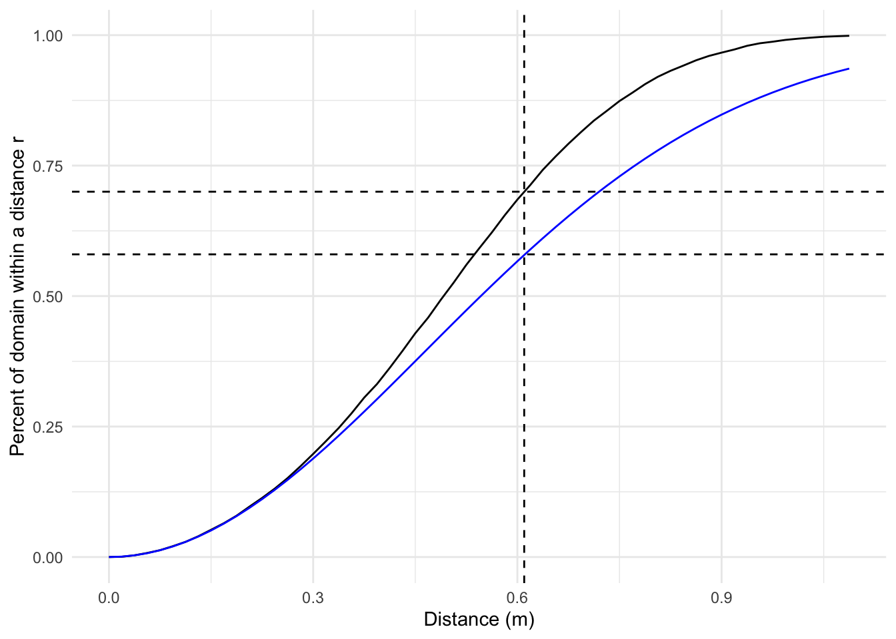
The horizontal dashed line at \(F\) = .7 intersects the black line at a distance of .6 meter. This means that 70% of the spatial domain is less than .6 meters from a sapling. The blue line is the theoretical homogeneous Poisson process model. If the process was CSR slightly less than 58% (\(F\) = .58) of the domain would be less than .6 meter from a sapling. In words, the saplings display less “gappiness” (more regularity) than expected by chance.
The \(J\) function is the ratio of the \(F\) to the \(G\) function. For a CSR processes the value of \(J\) is one. Here we see a large and systematic departure of \(J\) from unity for distances greater than about .5 meter, due to the regularity.
J.df <- as.data.frame(Jest(SP)) %>%
filter(r < 10) %>%
mutate(r = r * .1)
ggplot(J.df, aes(x = r, y = km)) +
geom_line() +
geom_line(aes(y = theo), color = "blue") +
xlab("Distance (m)") + ylab("") +
theme_minimal()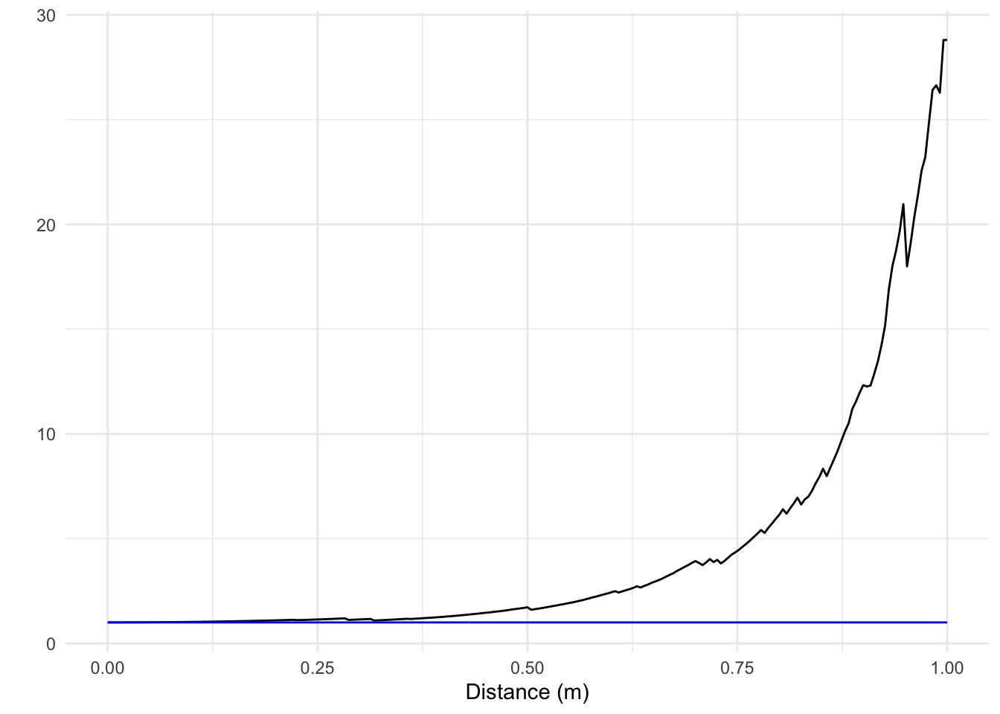
The Kest() function estimates the \(K(d)\) (Ripley’s reduced second moment function) from a point pattern. The function is defined as
\[
\hat K(r) = \frac{1}{\hat \lambda} \sum_{j \ne i} \frac{I(r_{ij} < r)}{n}
\]
where \(r_{ij}\) is the euclidean distance between event \(i\) and event \(j\), \(r\) is the search radius, and \(\hat \lambda\) is an estimate of the intensity \((\hat \lambda = n/|A|)\) where \(|A|\) is the window area and \(n\) is the number of events. \(I(.)\) is an indicator function equal to 1 when the expression inside the parentheses is true, and 0 otherwise. If the events are homogeneous, \(\hat{K}(r)\) increases at a rate proportional to \(\pi r^2\).
1.6.0.1 Another example: Bramble canes
The locations of bramble canes are available as a marked ppp object in the {spatstat} package. A bramble is any rough (usually wild) tangled prickly shrub with thorny stems.
## Marked planar point pattern: 823 points
## Average intensity 823 points per square unit (one unit = 9 metres)
##
## Coordinates are given to 3 decimal places
## i.e. rounded to the nearest multiple of 0.001 units (one unit = 9 metres)
##
## Multitype:
## frequency proportion intensity
## 0 359 0.43620900 359
## 1 385 0.46780070 385
## 2 79 0.09599028 79
##
## Window: rectangle = [0, 1] x [0, 1] units
## Window area = 1 square unit
## Unit of length: 9 metresThe marks represent the different cane ages as an ordered factor. The unit of length is 9 meters.

Here we consider the point pattern for all canes.
We estimate the \(K\) function on these point pattern data and make a plot. Here we plot the empirical estimate of \(K\) with isotropic correction at the domain borders (iso).
K.df <- as.data.frame(Kest(bramblecanes)) %>%
mutate(r = r * 9)
ggplot(K.df, aes(x = r, y = iso)) +
geom_line() +
geom_line(aes(y = theo), color = "blue") +
xlab("Distance (m)") + ylab("K(r)") +
theme_minimal()
The empirical estimate of \(K\) (black line) is to the left of the theoretical function under CSR (blue line). This means that for any distance between 0 and 2 m from any event there tends to be more events within this distance (larger \(K\)). We say that the bramble canes are more clustered than CRS.
The expected number of additional events is multiplied by the total number of events (823) so a value of .1 indicates that at a distance of about 1.6 meters we would expect to see about 82 additional events.
1.6.0.2 Example: Kansas tornadoes
Last week we mapped the intensity of tornadoes across Kansas by considering the genesis locations as point pattern data. Here we return to these data and consider only tornadoes since 1994.
library(sf)
library(dplyr)
Torn.sf <- st_read(dsn = "1950-2018-torn-initpoint") %>%
st_transform(crs = 3082) %>%
filter(mag >= 0, yr >= 1994) %>%
mutate(EF = as.factor(mag)) %>%
dplyr::select(EF)## Reading layer `1950-2018-torn-initpoint' from data source `/Users/jelsner/Desktop/Projects/ASSFG-Book/1950-2018-torn-initpoint' using driver `ESRI Shapefile'
## Simple feature collection with 63645 features and 22 fields
## geometry type: POINT
## dimension: XY
## bbox: xmin: -163.53 ymin: 18.13 xmax: -64.9 ymax: 61.02
## CRS: 4326Convert the simple feature data frame to a ppp object. First we need to convert the simple feature to a SpatialPointsDataFrame.
Create the analysis window using the state boundary then subset the tornado locations by the border. We use the rescale() function with scale (s =) set to 1000. We compute the average intensity of the point pattern.
library(USAboundaries)
library(maptools)
KS.sf <- us_states(states = "Kansas") %>%
st_transform(crs = st_crs(Torn.sf)$proj4string)
KS.sp <- as(KS.sf, "Spatial")
KS.win <- as(KS.sp, 'owin')
T.ppp <- T.ppp[KS.win]
T.ppp <- spatstat::rescale(T.ppp,
s = 1000,
unitname = "km")
plot(T.ppp)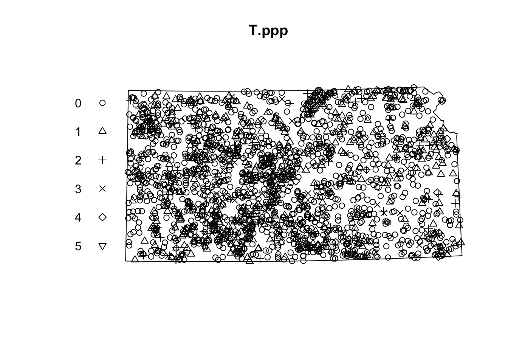
## [1] 0.01010672There are 2181 events with an average intensity of .01 events per square km (1 tornado per 10 square km over the 24-year period 1994–2018).
Ripley’s K function.
K.df <- as.data.frame(Kest(T.ppp))
ggplot(K.df, aes(x = r, y = iso * summary(T.ppp)$intensity)) +
geom_line() +
geom_line(aes(y = theo * summary(T.ppp)$intensity), color = "blue") +
geom_vline(xintercept = 60, lty = 'dashed') +
geom_hline(yintercept = 129, lty = 'dashed') +
geom_hline(yintercept = 115, lty = 'dashed') +
xlab("Distance (km)") + ylab("K(r), Expected number of additional tornadoes\n within a distance r of any tornado") +
theme_minimal()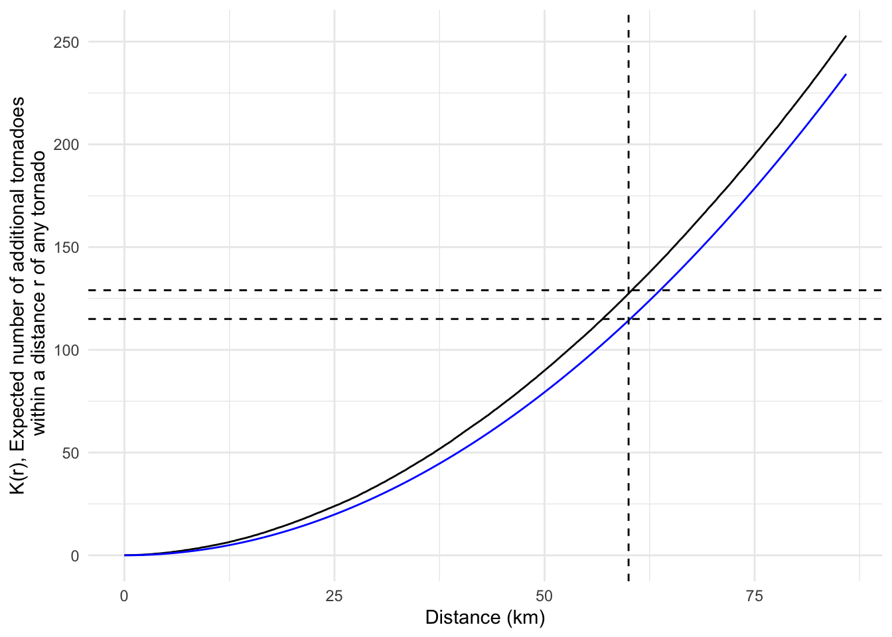
Interpretation: Consider 60 km along the horizontal axis. If we draw a line up from there we can see that the line intersects the black curve at a height of about 129. This value indicates that at a distance of 60 km from a random tornado we find, on average, about 129 other tornadoes. Imagine placing a disc with radius 60 km around centered on each event then averaging the number of events under the disc over all events.
The blue line is the curve under the assumption that the tornadoes are CSR across the state. We can see that if this was the case we would expect to see on average about 115 tornadoes within a distance 60 km from any tornado. Since there are MORE tornadoes than expected within a given 60 km radius we say there is evidence for clustering at this scale.
The black line lies above the blue line across distances from 0 to greater than 100 km.
How do we interpret the output from the nearest neighbor distance function applied to the set of Kansas tornadoes? Here we create a data frame from the output of the Gest() function and remove distances exceeding 8 km.
G.df <- as.data.frame(Gest(T.ppp)) %>%
filter(r < 8)
ggplot(G.df, aes(x = r, y = km)) +
geom_line() +
geom_line(aes(y = theo), color = "blue") +
geom_hline(yintercept = .4, lty = 'dashed') +
geom_vline(xintercept = c(3.2, 4), lty = 'dashed') +
xlab("Distance (m)") + ylab("G(r): Cumulative % of distances\n within a distance r of another tornado") +
theme_minimal()
The interpretation is that 40% (\(G\) = .4) of all tornado locations have another tornado within a distance of just about 3.2 km on average. If the reports where homogeneous Poisson then the distance would be 4 km. We conclude they are more clustered.
Note: With this many events the difference between the raw and border-corrected estimates is small.
1.6.1 Statistical significance
We see the separation between the black solid line and the blue dashed line, but is this separation large relative to the sample size? More to the point, is the above difference between the empirical and theoretical distance functions (e.g., \(G\)) large enough to conclude there is significant clustering?
In general, there are two ways to approach inference. 1) Compare the statistic of interest against many cases generated from the null hypothesis and ask: does the statistic fall outside the envelope of the null cases? 2) Get estimates of uncertainty on the statistic of interest and ask: does the uncertainty interval contain the null case?
The envelope() function takes a ppp object and computes the cluster statistic of interest for nsim cases under the null hypothesis of a homogeneous Poisson process (CSR). This is inference in the 1st way.
Because the computation takes time with this many events we consider a subset of all the tornadoes that have an EF rating of 2 or higher. These are called ‘significant’ tornadoes (strong and violent).
Here we create a new ppp object that contains only tornadoes rated at least EF2. Note since the marks is a factor vector we can’t use >=.
ST.ppp <- unmark(T.ppp[T.ppp$marks == 2 |
T.ppp$marks == 3 |
T.ppp$marks == 4 |
T.ppp$marks == 5])
Kenv <- envelope(ST.ppp,
fun = Kest,
nsim = 99)## Generating 99 simulations of CSR ...
## 1, 2, 3, 4, 5, 6, 7, 8, 9, 10, 11, 12, 13, 14, 15, 16, 17, 18, 19, 20, 21, 22, 23, 24, 25, 26, 27, 28, 29, 30, 31, 32, 33, 34, 35, 36, 37, 38, 39, 40,
## 41, 42, 43, 44, 45, 46, 47, 48, 49, 50, 51, 52, 53, 54, 55, 56, 57, 58, 59, 60, 61, 62, 63, 64, 65, 66, 67, 68, 69, 70, 71, 72, 73, 74, 75, 76, 77, 78, 79, 80,
## 81, 82, 83, 84, 85, 86, 87, 88, 89, 90, 91, 92, 93, 94, 95, 96, 97, 98, 99.
##
## Done.Kenv.df <- as.data.frame(Kenv)
ggplot(Kenv.df, aes(x = r, y = obs)) +
geom_ribbon(aes(ymin = lo, ymax = hi), fill = "gray70") +
geom_line() +
geom_line(aes(y = theo), color = "blue", lty = 'dashed') +
xlab("Distance (km)") + ylab("K(r)") +
theme_minimal()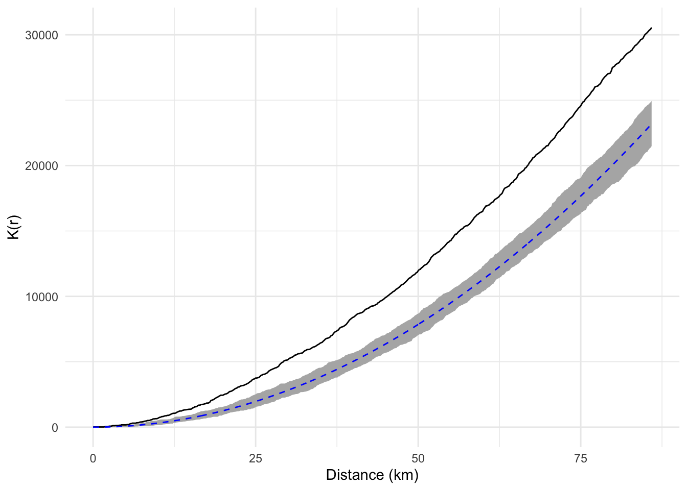
Here we see the \(K\) function computed on the data in the black line and the theoretical estimate of \(K\) under CSR in the blue dashed line. The uncertainty ribbon (gray band) connects the point-wise minimum and maximum values of the 99 simulated values where the simulations are done using the theoretical model. The default option in the envelope() function is the minimum and maximum value (rank = 1).
We can confidently conclude that (significant) tornadoes are more clustered across Kansas than one would expect by chance.
If the specific intention is to test a null hypothesis of CSR, then a single number measuring the departure of the estimated \(K\) from the \(K\) computed from a CSR model is appropriate. One such number is the maximum absolute deviation implemented with the mad.test() function.
## Generating 99 simulations of CSR ...
## 1, 2, 3, 4, 5, 6, 7, 8, 9, 10, 11, 12, 13, 14, 15, 16, 17, 18, 19, 20, 21, 22, 23, 24, 25, 26, 27, 28, 29, 30, 31, 32, 33, 34, 35, 36, 37, 38, 39, 40,
## 41, 42, 43, 44, 45, 46, 47, 48, 49, 50, 51, 52, 53, 54, 55, 56, 57, 58, 59, 60, 61, 62, 63, 64, 65, 66, 67, 68, 69, 70, 71, 72, 73, 74, 75, 76, 77, 78, 79, 80,
## 81, 82, 83, 84, 85, 86, 87, 88, 89, 90, 91, 92, 93, 94, 95, 96, 97, 98, 99.
##
## Done.##
## Maximum absolute deviation test of CSR
## Monte Carlo test based on 99 simulations
## Summary function: K(r)
## Reference function: theoretical
## Alternative: two.sided
## Interval of distance values: [0, 85.9002061915644] km
## Test statistic: Maximum absolute deviation
## Deviation = observed minus theoretical
##
## data: ST.ppp
## mad = 7449.1, rank = 1, p-value = 0.01Since there are 99 simulations the lowest \(p\)-value is .01.
Another test statistic is related to the sum of the squared deviations between the estimated and theoretical functions. It is implemented with the dclf.test() function.
## Generating 99 simulations of CSR ...
## 1, 2, 3, 4, 5, 6, 7, 8, 9, 10, 11, 12, 13, 14, 15, 16, 17, 18, 19, 20, 21, 22, 23, 24, 25, 26, 27, 28, 29, 30, 31, 32, 33, 34, 35, 36, 37, 38, 39, 40,
## 41, 42, 43, 44, 45, 46, 47, 48, 49, 50, 51, 52, 53, 54, 55, 56, 57, 58, 59, 60, 61, 62, 63, 64, 65, 66, 67, 68, 69, 70, 71, 72, 73, 74, 75, 76, 77, 78, 79, 80,
## 81, 82, 83, 84, 85, 86, 87, 88, 89, 90, 91, 92, 93, 94, 95, 96, 97, 98, 99.
##
## Done.##
## Diggle-Cressie-Loosmore-Ford test of CSR
## Monte Carlo test based on 99 simulations
## Summary function: K(r)
## Reference function: theoretical
## Alternative: two.sided
## Interval of distance values: [0, 85.9002061915644] km
## Test statistic: Integral of squared absolute deviation
## Deviation = observed minus theoretical
##
## data: ST.ppp
## u = 1601197032, rank = 1, p-value = 0.01In both cases the \(p\)-value on the test statistic against the one-sided alternative is less than .01 (Note, the reported \(p\)-value is two-sided) indicating conclusive evidence of clustering.
Let us repeat this using the Swedish pine sapling data set (swedishpines).
## Generating 99 simulations of CSR ...
## 1, 2, 3, 4, 5, 6, 7, 8, 9, 10, 11, 12, 13, 14, 15, 16, 17, 18, 19, 20, 21, 22, 23, 24, 25, 26, 27, 28, 29, 30, 31, 32, 33, 34, 35, 36, 37, 38, 39, 40,
## 41, 42, 43, 44, 45, 46, 47, 48, 49, 50, 51, 52, 53, 54, 55, 56, 57, 58, 59, 60, 61, 62, 63, 64, 65, 66, 67, 68, 69, 70, 71, 72, 73, 74, 75, 76, 77, 78, 79, 80,
## 81, 82, 83, 84, 85, 86, 87, 88, 89, 90, 91, 92, 93, 94, 95, 96, 97, 98, 99.
##
## Done.Kenv.df <- as.data.frame(Kenv)
ggplot(Kenv.df, aes(x = r, y = obs * summary(SP)$intensity)) +
geom_ribbon(aes(ymin = lo * summary(SP)$intensity,
ymax = hi * summary(SP)$intensity), fill = "gray70") +
geom_line() + geom_line(aes(y = theo * summary(SP)$intensity), color = "blue", lty = 'dashed') +
xlab("Distance (km)") + ylab("K(r), Expected number of additional saplings\n within a distance r of a sapling") +
theme_minimal()
Q: How do we interpret this? Scale matters.
Based on the fact that much of the black line is within the gray envelope indicates that a formal test against the null hypothesis of CSR will likely fail.
## Generating 99 simulations of CSR ...
## 1, 2, 3, 4, 5, 6, 7, 8, 9, 10, 11, 12, 13, 14, 15, 16, 17, 18, 19, 20, 21, 22, 23, 24, 25, 26, 27, 28, 29, 30, 31, 32, 33, 34, 35, 36, 37, 38, 39, 40,
## 41, 42, 43, 44, 45, 46, 47, 48, 49, 50, 51, 52, 53, 54, 55, 56, 57, 58, 59, 60, 61, 62, 63, 64, 65, 66, 67, 68, 69, 70, 71, 72, 73, 74, 75, 76, 77, 78, 79, 80,
## 81, 82, 83, 84, 85, 86, 87, 88, 89, 90, 91, 92, 93, 94, 95, 96, 97, 98, 99.
##
## Done.##
## Maximum absolute deviation test of CSR
## Monte Carlo test based on 99 simulations
## Summary function: K(r)
## Reference function: theoretical
## Alternative: two.sided
## Interval of distance values: [0, 24] units (one unit = 0.1 metres)
## Test statistic: Maximum absolute deviation
## Deviation = observed minus theoretical
##
## data: swedishpines
## mad = 150.69, rank = 23, p-value = 0.23## Generating 99 simulations of CSR ...
## 1, 2, 3, 4, 5, 6, 7, 8, 9, 10, 11, 12, 13, 14, 15, 16, 17, 18, 19, 20, 21, 22, 23, 24, 25, 26, 27, 28, 29, 30, 31, 32, 33, 34, 35, 36, 37, 38, 39, 40,
## 41, 42, 43, 44, 45, 46, 47, 48, 49, 50, 51, 52, 53, 54, 55, 56, 57, 58, 59, 60, 61, 62, 63, 64, 65, 66, 67, 68, 69, 70, 71, 72, 73, 74, 75, 76, 77, 78, 79, 80,
## 81, 82, 83, 84, 85, 86, 87, 88, 89, 90, 91, 92, 93, 94, 95, 96, 97, 98, 99.
##
## Done.##
## Diggle-Cressie-Loosmore-Ford test of CSR
## Monte Carlo test based on 99 simulations
## Summary function: K(r)
## Reference function: theoretical
## Alternative: two.sided
## Interval of distance values: [0, 24] units (one unit = 0.1 metres)
## Test statistic: Integral of squared absolute deviation
## Deviation = observed minus theoretical
##
## data: swedishpines
## u = 106917, rank = 19, p-value = 0.19We see that this is in fact the case.
The 2nd way to approach inference is through resampling. The lohboot() function estimates the uncertainty on the computed statistic using a bootstrap procedure of Loh (2008) with modifications of Baddley et al. (2015).
By default the uncertainty (confidence) interval is 95%. It works by computing the local version of the function (e.g., localK()) on the set of resampled events.
## 1, 2, 3, 4.6.8.10.12.14.16.18.20.22.24.26.28.30.32.34.36.38.40
## .42.44.46.48.50.52.54.56.58.60.62.64.66.68.70.72.74.76.78.80
## .82.84.86.88.90.92.94.96.98.100.102.104.106.108.110.112.114.116.118.120
## .122.124.126.128.130.132.134.136.138.140.142.144.146.148.150.152.154.156.158.160
## .162.164.166.168.170.172 173.ggplot(Kboot.df, aes(x = r, y = iso)) +
geom_ribbon(aes(ymin = lo, ymax = hi), fill = "gray70") +
geom_line() +
geom_line(aes(y = theo), color = "blue", lty = 'dashed') +
xlab("Distance (km)") + ylab("K(r)") +
theme_minimal()
Now the uncertainty band is plotted about the estimated \(K\) function rather than about the null model. We see that the 95% uncertainty band does to include the CSR model (blue line). We confidently conclude that the significant tornadoes in Kansas are more clustered than chance.
Again for the Swedish pine saplings.
## 1, 2, 3, 4, 5, 6, 7, 8, 9, 10, 11, 12, 13, 14, 15, 16, 17, 18, 19, 20, 21, 22, 23, 24, 25, 26, 27, 28, 29, 30, 31, 32, 33, 34, 35, 36, 37, 38, 39, 40,
## 41, 42, 43, 44, 45, 46, 47, 48, 49, 50, 51, 52, 53, 54, 55, 56, 57, 58, 59, 60, 61, 62, 63, 64, 65, 66, 67, 68, 69, 70, 71.ggplot(Kboot.df, aes(x = r, y = iso)) +
geom_ribbon(aes(ymin = lo, ymax = hi), fill = "gray70") +
geom_line() +
geom_line(aes(y = theo), color = "blue", lty = 'dashed') +
xlab("Distance (km)") + ylab("K(r)") +
theme_minimal()
1.6.1.1 Multitype clustering
Analogues of the \(G\) and \(K\) functions are available for ‘multitype’ point patterns. Multitype patterns have factor marks. Interest focuses on whether the occurrence of one type of event influences the occurrence of another type of event. For example, does the occurrence of species X over this domain influence the occurrence of species Y? Physically what might cause this?
The most common statistic for examining ‘cross correlation’ of event type occurrences is the \(K\) cross function \(K_{ij}(r)\), which estimates the expected number of events of type j within a distance r of type i.
The lansing ppp contains the locations of 2,251 trees in a wooded lot.
## Marked planar point pattern: 2251 points
## Average intensity 2251 points per square unit (one unit = 924 feet)
##
## *Pattern contains duplicated points*
##
## Coordinates are given to 3 decimal places
## i.e. rounded to the nearest multiple of 0.001 units (one unit = 924 feet)
##
## Multitype:
## frequency proportion intensity
## blackoak 135 0.05997335 135
## hickory 703 0.31230560 703
## maple 514 0.22834300 514
## misc 105 0.04664594 105
## redoak 346 0.15370950 346
## whiteoak 448 0.19902270 448
##
## Window: rectangle = [0, 1] x [0, 1] units
## Window area = 1 square unit
## Unit of length: 924 feetThe data are a multitype planar point pattern with marks indicating tree species. There are 135 black oaks, 703 hickories, etc. The spatial unit is 924 feet.
Compute and plot the cross \(K\) function for Maple and Hickory trees.
Kc <- Kcross(lansing, i = "maple", j = "hickory")
Kc.df <- as.data.frame(Kc)
ggplot(Kc.df, aes(x = r, y = iso)) +
geom_line() +
geom_line(aes(y = theo), color = "blue") +
geom_vline(xintercept = .2, lty = 'dashed') +
geom_hline(yintercept = .093, lty = 'dashed') +
geom_hline(yintercept = .125, lty = 'dashed') +
xlab("Distance") + ylab("Kc(r)") +
theme_minimal()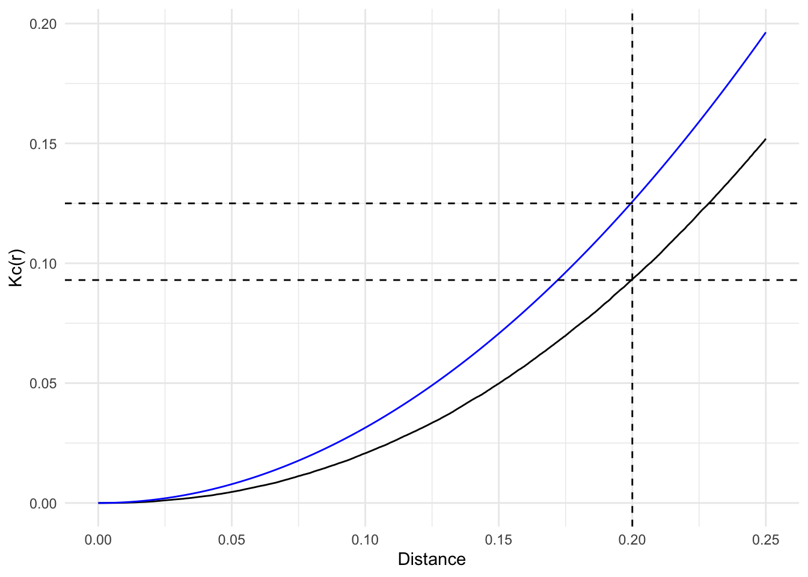
The vertical axis is the number of hickory trees within a radius r of a maple tree divided by the average intensity of the hickories. So at a distance of .2 (.2 x 924 ft = 180 ft) from a random maple there is an average of roughly 65 hickories (.093 x 703 hickories). If hickory and maple trees are CSR we would expect about 88 maples (.125 * 703) within that distance.
The presence of a hickory tree reduces the likelihood that a maple tree will be nearby.
Do the same for your EF1 and EF3 tornadoes.

Kc <- Kcross(T.ppp,
i = "1",
j = "3")
Kc.df <- as.data.frame(Kc)
ggplot(Kc.df, aes(x = r, y = iso)) +
geom_line() +
geom_line(aes(y = theo), color = "blue") +
geom_vline(xintercept = 70, lty = 'dashed') +
geom_hline(yintercept = 19000, lty = 'dashed') +
geom_hline(yintercept = 15000, lty = 'dashed') +
xlab("Distance") + ylab("Kc(r)") +
theme_minimal()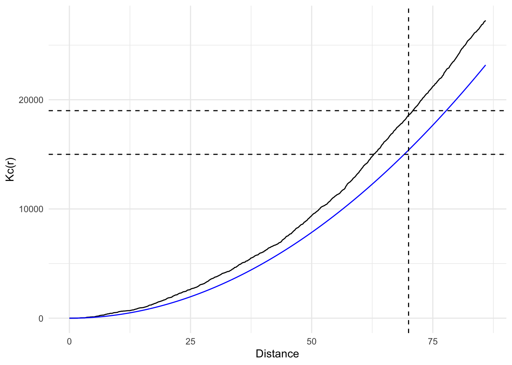
The vertical axis is the number of EF3 tornadoes within a radius r of an EF1 tornado divided by the average intensity of the EF3 tornadoes. At a distance of 70 km from a random EF1 tornado there are on average 19000 x .000277 = 5.3 EF3 tornadoes. If EF1 and EF3 tornadoes are CSR then we would expect, on average, somewhat fewer EF3 tornadoes in the vicinity of EF1 tornadoes (15000 x .000277 = 4.2).
We can see this more directly by using the envelope() function with the fun = Kross. We first use the subset() method with drop = TRUE to make a new ppp object with only those two groups.
T.ppp13 <- subset(T.ppp,
marks == "1" |
marks == "3",
drop = TRUE)
Kcenv <- envelope(T.ppp13,
fun = Kcross,
nsim = 99)## Generating 99 simulations of CSR ...
## 1, 2, 3, 4, 5, 6, 7, 8, 9, 10, 11, 12, 13, 14, 15, 16, 17, 18, 19, 20, 21, 22, 23, 24, 25, 26, 27, 28, 29, 30, 31, 32, 33, 34, 35, 36, 37, 38, 39, 40,
## 41, 42, 43, 44, 45, 46, 47, 48, 49, 50, 51, 52, 53, 54, 55, 56, 57, 58, 59, 60, 61, 62, 63, 64, 65, 66, 67, 68, 69, 70, 71, 72, 73, 74, 75, 76, 77, 78, 79, 80,
## 81, 82, 83, 84, 85, 86, 87, 88, 89, 90, 91, 92, 93, 94, 95, 96, 97, 98, 99.
##
## Done.Kcenv.df <- as.data.frame(Kcenv)
ggplot(Kcenv.df, aes(x = r, y = obs)) +
geom_ribbon(aes(ymin = lo, ymax = hi), fill = "gray70") +
geom_line() +
geom_line(aes(y = theo), color = "blue", lty = 'dashed') +
xlab("Distance (km)") + ylab("Kc(r)") +
theme_minimal()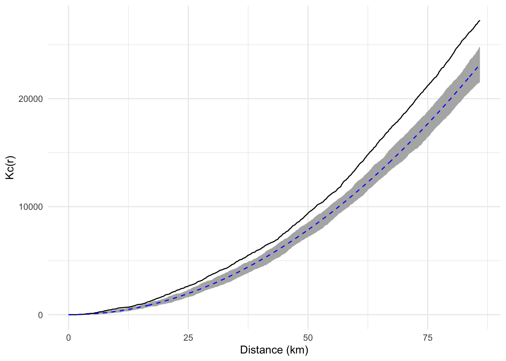
And we can formally test as before using the mad.test() function.
## Generating 99 simulations of CSR ...
## 1, 2, 3, 4, 5, 6, 7, 8, 9, 10, 11, 12, 13, 14, 15, 16, 17, 18, 19, 20, 21, 22, 23, 24, 25, 26, 27, 28, 29, 30, 31, 32, 33, 34, 35, 36, 37, 38, 39, 40,
## 41, 42, 43, 44, 45, 46, 47, 48, 49, 50, 51, 52, 53, 54, 55, 56, 57, 58, 59, 60, 61, 62, 63, 64, 65, 66, 67, 68, 69, 70, 71, 72, 73, 74, 75, 76, 77, 78, 79, 80,
## 81, 82, 83, 84, 85, 86, 87, 88, 89, 90, 91, 92, 93, 94, 95, 96, 97, 98, 99.
##
## Done.##
## Maximum absolute deviation test of CSR
## Monte Carlo test based on 99 simulations
## Summary function: Kcross["1", "3"](r)
## Reference function: theoretical
## Alternative: two.sided
## Interval of distance values: [0, 85.9002061915644] km
## Test statistic: Maximum absolute deviation
## Deviation = observed minus theoretical
##
## data: T.ppp13
## mad = 4162.6, rank = 1, p-value = 0.01## Generating 99 simulations of CSR ...
## 1, 2, 3, 4, 5, 6, 7, 8, 9, 10, 11, 12, 13, 14, 15, 16, 17, 18, 19, 20, 21, 22, 23, 24, 25, 26, 27, 28, 29, 30, 31, 32, 33, 34, 35, 36, 37, 38, 39, 40,
## 41, 42, 43, 44, 45, 46, 47, 48, 49, 50, 51, 52, 53, 54, 55, 56, 57, 58, 59, 60, 61, 62, 63, 64, 65, 66, 67, 68, 69, 70, 71, 72, 73, 74, 75, 76, 77, 78, 79, 80,
## 81, 82, 83, 84, 85, 86, 87, 88, 89, 90, 91, 92, 93, 94, 95, 96, 97, 98, 99.
##
## Done.##
## Diggle-Cressie-Loosmore-Ford test of CSR
## Monte Carlo test based on 99 simulations
## Summary function: Kcross["1", "3"](r)
## Reference function: theoretical
## Alternative: two.sided
## Interval of distance values: [0, 85.9002061915644] km
## Test statistic: Integral of squared absolute deviation
## Deviation = observed minus theoretical
##
## data: T.ppp13
## u = 361332496, rank = 1, p-value = 0.01Both tests lead us to conclude EF3 tornadoes are more likely near EF1 tornadoes than would be expected if they were independently CSR. What is the cause?
1.6.2 More on Ripley’s K
Ripley’s \(K\) function (Ripley, 1976) is a descriptive statistic used to detect deviations from CSR. It is used to help determine whether events have a random, dispersed or clustered pattern.
Compute Ripley’s \(K\) and look at the classes of the resulting object.
## [1] "fv" "data.frame"It has two classes fv and data.frame. It is a data frame but with addtional attribute information. We focus on the data frame portion.
## r theo border trans iso
## 1 0.0000000 0.00000000 0.000000 0.000000 0.000000
## 2 0.1677738 0.08842974 5.897632 5.900337 5.900337
## 3 0.3355477 0.35371897 6.368816 6.354209 6.354209
## 4 0.5033215 0.79586769 7.031561 7.080404 7.080404
## 5 0.6710954 1.41487589 7.579475 7.625051 7.625051
## 6 0.8388692 2.21074358 8.222502 8.260472 8.260472In particular we want the values of r and iso. The value of iso times average intensity is the number of tornadoes within a distance r.
We add this information to the data frame.
Suppose we are interested in the average number of tornadoes at a distance of exactly 50 km. We use the approx() function to interpolate the value of nT at a distance of 50 km.
## [1] 89.95065The variance stabilized Ripley \(K\) function called the \(L\) function is often used instead of \(K\). The sample version of the \(L\) function is defined as \[ \hat{L}(r) = \Big( \hat{K}(r)/\pi\Big)^{1/2}. \]
For data that is CSR, the \(L\) function has expected value \(r\) and its variance is approximately constant in \(r\). A common plot is a graph of \(r - \hat{L}(r)\) against \(r\), which approximately follows the horizontal zero-axis with constant dispersion if the data follow a homogeneous Poisson process.
1.6.3 Caution when interpreting these clustering functions
The clustering functions are defined and estimated under the assumption that the point process is stationary (homogeneous). If the process is inhomogeneous (trending) then deviations from the theoretical model do not necessarily imply interaction clustering. Also, the clustering functions characterize the process ‘on average’ so variability in the interaction process as a function of scale will not be detected.
As an example of the latter, we generate a random point pattern with local clustering but with regularity on the scale of the entire window. Thus it is CSR on average as indicated by the \(K\) function.
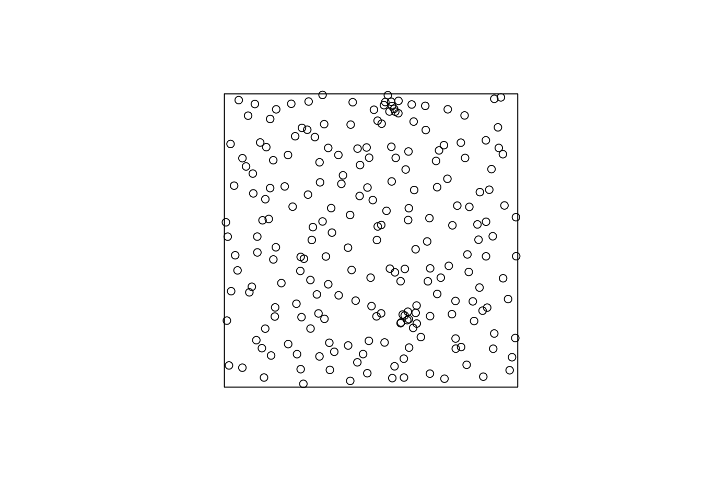
We see two clusters one in the north and one in the south. But overall the events appear to be more regular than CSR.
Your interpretation based on Ripley’s \(K\) function would be that this pattern is CSR.
K.df <- as.data.frame(Kest(X))
ggplot(K.df, aes(x = r, y = iso)) +
geom_line() +
geom_line(aes(y = theo), color = "blue") +
xlab("Distance (km)") + ylab("K(r)") +
theme_minimal()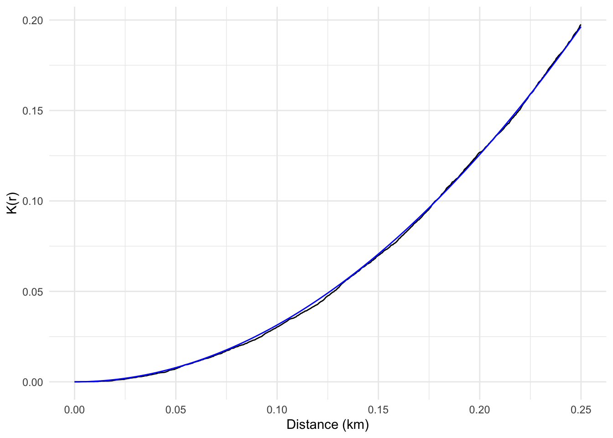
The empirical curve (black line) coincides with the theoretical CSR line (blue line).
And the maximum absolute deviation test under the null hypothesis of CSR returns a large \(p\)-value.
## Generating 999 simulations of CSR ...
## 1, 2, 3, ......10.........20.........30.........40.........50.........60........
## .70.........80.........90.........100.........110.........120.........130......
## ...140.........150.........160.........170.........180.........190.........200....
## .....210.........220.........230.........240.........250.........260.........270..
## .......280.........290.........300.........310.........320.........330.........340
## .........350.........360.........370.........380.........390.........400........
## .410.........420.........430.........440.........450.........460.........470......
## ...480.........490.........500.........510.........520.........530.........540....
## .....550.........560.........570.........580.........590.........600.........610..
## .......620.........630.........640.........650.........660.........670.........680
## .........690.........700.........710.........720.........730.........740........
## .750.........760.........770.........780.........790.........800.........810......
## ...820.........830.........840.........850.........860.........870.........880....
## .....890.........900.........910.........920.........930.........940.........950..
## .......960.........970.........980.........990........ 999.
##
## Done.##
## Maximum absolute deviation test of CSR
## Monte Carlo test based on 999 simulations
## Summary function: K(r)
## Reference function: theoretical
## Alternative: two.sided
## Interval of distance values: [0, 0.25]
## Test statistic: Maximum absolute deviation
## Deviation = observed minus theoretical
##
## data: X
## mad = 0.0023931, rank = 871, p-value = 0.871As an example of the former (process is inhomogeneous), here we generate a point process as inhomogeneous without clustering.
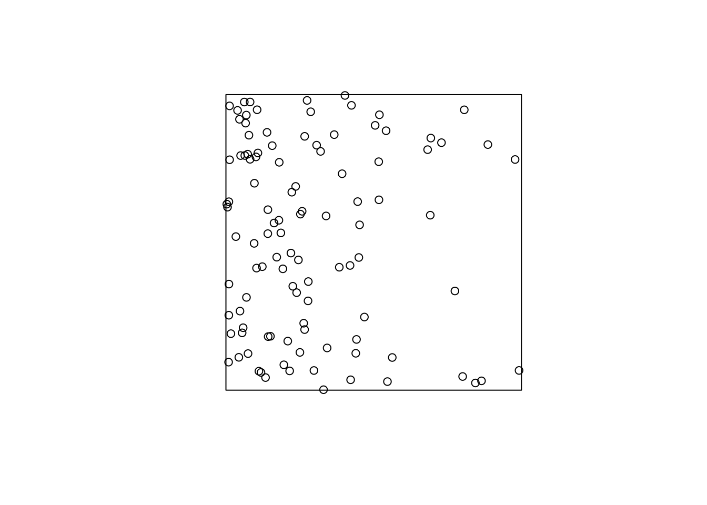
There is a clear trend toward fewer events going from west to east.
The \(K\) function indicates clustering but this is an artifact of this trend.
K.df <- as.data.frame(Kest(X))
ggplot(K.df, aes(x = r, y = iso)) +
geom_line() +
geom_line(aes(y = theo), color = "blue") +
xlab("Distance (km)") + ylab("K(r)") +
theme_minimal()
In the case of a known trend we use the Kinhom() function instead of Kest(). For example, compare the uncertainty envelopes from a homogeneous and inhomogeneous Poisson process.
We start by plotting the output from the envelope() function with fun = Kest. The global = TRUE argument indicates that the envelopes are simultaneous rather than pointwise (global = FALSE which is the default). Pointwise envelopes assume the estimates are independent (usually not a good assumption) across the range of distances so the standard errors will be smaller resulting in narrower bands.
## Generating 39 simulations of CSR ...
## 1, 2, 3, 4, 5, 6, 7, 8, 9, 10, 11, 12, 13, 14, 15, 16, 17, 18, 19, 20, 21, 22, 23, 24, 25, 26, 27, 28, 29, 30, 31, 32, 33, 34, 35, 36, 37, 38, 39.
##
## Done.Kenv.df <- as.data.frame(Kenv)
ggplot(Kenv.df, aes(x = r, y = obs)) +
geom_ribbon(aes(ymin = lo, ymax = hi), fill = "gray70") +
geom_line() +
geom_line(aes(y = theo), color = "blue", lty = 'dashed') +
xlab("Distance (km)") + ylab("K(r)") +
theme_minimal()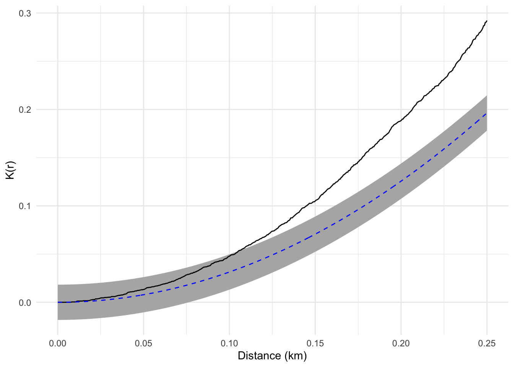
We note that after a distance of about .15 units the empirical curve (black line) is outside the uncertainty band indicating the events are more clustered than CSR.
However when we use fun = Kinhom then the empirical curve is completely inside the uncertainty band.
## Generating 99 simulations of CSR ...
## 1, 2, 3, 4, 5, 6, 7, 8, 9, 10, 11, 12, 13, 14, 15, 16, 17, 18, 19, 20, 21, 22, 23, 24, 25, 26, 27, 28, 29, 30, 31, 32, 33, 34, 35, 36, 37, 38, 39, 40,
## 41, 42, 43, 44, 45, 46, 47, 48, 49, 50, 51, 52, 53, 54, 55, 56, 57, 58, 59, 60, 61, 62, 63, 64, 65, 66, 67, 68, 69, 70, 71, 72, 73, 74, 75, 76, 77, 78, 79, 80,
## 81, 82, 83, 84, 85, 86, 87, 88, 89, 90, 91, 92, 93, 94, 95, 96, 97, 98, 99.
##
## Done.Kenv.df <- as.data.frame(Kenv)
ggplot(Kenv.df, aes(x = r, y = obs)) +
geom_ribbon(aes(ymin = lo, ymax = hi), fill = "gray70") +
geom_line() +
geom_line(aes(y = theo), color = "blue", lty = 'dashed') +
xlab("Distance (km)") + ylab("K(r), Expected number of additional events\n within a distance r of an event") +
theme_minimal()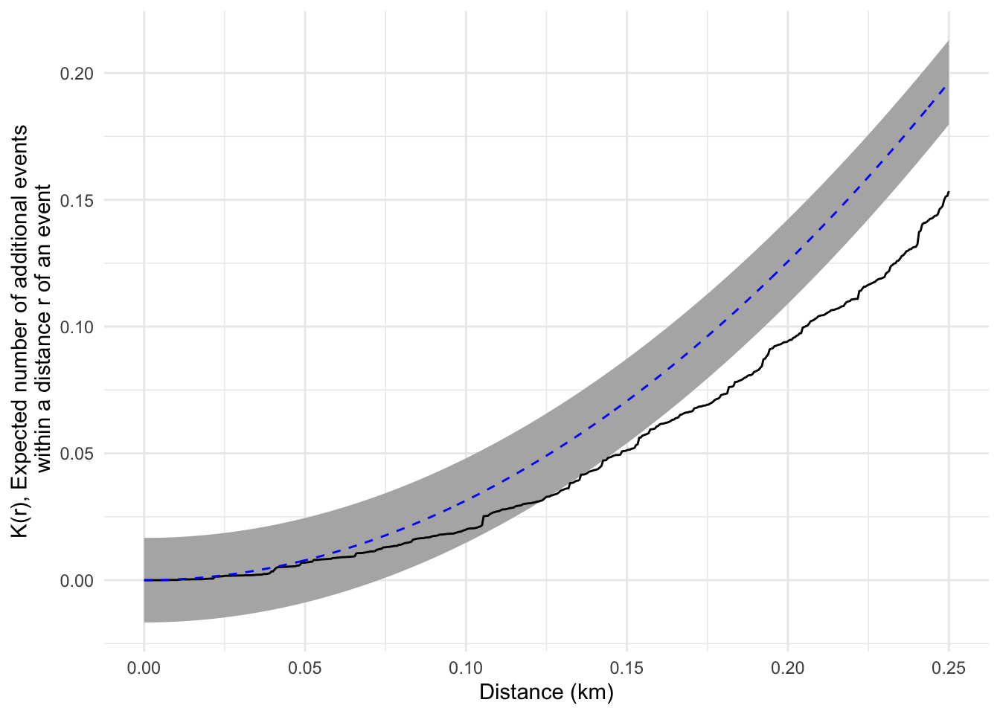
We conclude that the point pattern data are consistent with an inhomogeneous Poisson process without clustering.
Let’s return to the Kansas tornadoes (EF2+).
## Generating 99 simulations of CSR ...
## 1, 2, 3, 4, 5, 6, 7, 8, 9, 10, 11, 12, 13, 14, 15, 16, 17, 18, 19, 20, 21, 22, 23, 24, 25, 26, 27, 28, 29, 30, 31, 32, 33, 34, 35, 36, 37, 38, 39, 40,
## 41, 42, 43, 44, 45, 46, 47, 48, 49, 50, 51, 52, 53, 54, 55, 56, 57, 58, 59, 60, 61, 62, 63, 64, 65, 66, 67, 68, 69, 70, 71, 72, 73, 74, 75, 76, 77, 78, 79, 80,
## 81, 82, 83, 84, 85, 86, 87, 88, 89, 90, 91, 92, 93, 94, 95, 96, 97, 98, 99.
##
## Done.Kenv.df <- as.data.frame(Kenv)
ggplot(Kenv.df, aes(x = r, y = obs)) +
geom_ribbon(aes(ymin = lo, ymax = hi), fill = "gray70") +
geom_line() +
geom_line(aes(y = theo), color = "blue", lty = 'dashed') +
xlab("Distance (km)") + ylab("K(r)") +
theme_minimal()
We see some evidence of more clustered than CSR at short distances and some evidence of more regularity at long distances. This is likely the city/town effect that we noted last week.
But we would conclude from this plot that there is not strong evidence for clustering of tornado reports across the state of Kansas. We would be wrong.
1.6.4 Example: Wildfires in Florida
We import the Florida wildfire data as a simple feature data frame. Extract only fires occurring in Baker County (west of Duval County–Jacksonville). Include only wildfires started by lightning and select the fire size variable.
## Reading layer `FL_Fires' from data source `/Users/jelsner/Desktop/Projects/ASSFG-Book/FL_Fires' using driver `ESRI Shapefile'
## Simple feature collection with 90261 features and 37 fields
## geometry type: POINT
## dimension: XY
## bbox: xmin: -9750382 ymin: 2824449 xmax: -8908899 ymax: 3632749
## proj4string: +proj=merc +lon_0=0 +lat_ts=0 +x_0=0 +y_0=0 +a=6378137 +b=6378137 +units=m +no_defs## [1] 90261 38BakerFL.sf <- maps::map("county", regions = "Florida", plot = FALSE, fill = TRUE) %>%
st_as_sf() %>%
dplyr::filter(ID == "florida,baker") %>%
st_transform(crs = st_crs(FL_Fires.sf))
Baker_Fires.sf <- st_intersection(FL_Fires.sf, BakerFL.sf) %>%
dplyr::filter(STAT_CAUSE == 1) %>%
dplyr::select(FIRE_SIZE_)## Warning: attribute variables are assumed to be spatially constant throughout all
## geometriesCreate a ppp object and an unmarked ppp object. Summarize the unmarked object and make a plot.
Baker_Fires.sp <- as(Baker_Fires.sf, "Spatial")
BF.ppp <- as(Baker_Fires.sp, "ppp")
BFU.ppp <- unmark(BF.ppp)
summary(BFU.ppp)## Planar point pattern: 344 points
## Average intensity 1.361674e-07 points per square unit
##
## *Pattern contains duplicated points*
##
## Coordinates are given to 1 decimal place
## i.e. rounded to the nearest multiple of 0.1 units
##
## Window: rectangle = [-9179343, -9132435] x [3521558, 3575414] units
## (46910 x 53860 units)
## Window area = 2526300000 square units
The average intensity is 1.36 wildfires per 10 sq. km. But the intensity is based on a square domain.
Two points in a point pattern are identical if their x,y coordinates are the same, and their marks are the same (if they carry marks).
Remove duplicate points with the unique() function, set the window to the county border, and set the name for the unit of length.
BFU.ppp <- unique(BFU.ppp)
W.sp <- as(BakerFL.sf, "Spatial")
W <- as(W.sp, 'owin')
BFU.ppp <- BFU.ppp[W]
unitname(BFU.ppp) <- "meters"
summary(BFU.ppp)## Planar point pattern: 335 points
## Average intensity 1.612727e-07 points per square meters
##
## Coordinates are given to 1 decimal place
## i.e. rounded to the nearest multiple of 0.1 meters
##
## Window: polygonal boundary
## single connected closed polygon with 17 vertices
## enclosing rectangle: [-9179415, -9132216] x [3521247, 3577422] meters
## (47200 x 56170 meters)
## Window area = 2077230000 square meters
## Unit of length: 1 meters
## Fraction of frame area: 0.783
The average intensity is 1.6 wildfires per 10 sq. km.
Ripley’s K function.
K.df <- as.data.frame(Kest(BFU.ppp))
ggplot(K.df, aes(x = r, y = iso * summary(BFU.ppp)$intensity)) +
geom_line() +
geom_line(aes(y = theo * summary(BFU.ppp)$intensity), color = "blue") +
xlab("Distance (m)") + ylab("K(r), Expected number of additional wildfires\n within a distance r of any wildfire") +
theme_minimal()
We see a difference, but is it significant against a null hypothesis of inhomogeneous Poisson?
## Generating 39 simulations of CSR ...
## 1, 2, 3, 4, 5, 6, 7, 8, 9, 10, 11, 12, 13, 14, 15, 16, 17, 18, 19, 20, 21, 22, 23, 24, 25, 26, 27, 28, 29, 30, 31, 32, 33, 34, 35, 36, 37, 38, 39.
##
## Done.Kenv.df <- as.data.frame(Kenv)
ggplot(Kenv.df, aes(x = r, y = obs)) +
geom_ribbon(aes(ymin = lo, ymax = hi), fill = "gray70") +
geom_line() +
geom_line(aes(y = theo), color = "blue", lty = 'dashed') +
xlab("Distance (m)") + ylab("K(r)") +
theme_minimal()
No.
1.7 Cluster models
“It turns out that style matters in programming for the same reason that it matters in writing. It makes for better reading.” – Douglas Crockford
[Clean up this discuss a bit]
Cluster models are needed to describe point pattern data when event interactions violate the assumption of a homogenous Poisson process. Recall that event interaction implies that an event at one location changes the probability of an event or events nearby.
Cluster models can be derived from a Poisson process so as to retain some of their nice features. For example, with a Poisson cluster process, we begin with a Poisson process \(Y\) describing a set of ‘parent’ events. Each parent \(y_i\) in \(Y\) produces to a finite set \(x_i\) of ‘offspring’ events according to some random (read: stochastic) mechanism. Then the set of all offsprings forms a clustered point process \(X\). Only \(X\) is observed and it will not be adequately described by homogeneous Poisson process (CSR).
Said another way, the model is homogeneous Poisson at an unobserved level but clustered at the level of the observations. Note: “model is homogeneous Poisson” refers to the idea that events locations generated from the model will be indistinguishable from a homogeneous Poisson process.
The Matern cluster process is one such example. Parent events come from a homogeneous Poisson process with intensity \(\kappa\) and each parent has a Poisson (\(\mu\)) number of offspring that are independently and uniformly distributed (iid) within a disc of radius \(r\) centered on the parent.
For instance here we use the rMatClust() function from the {spatstat} package to produce a clustered ppp object. We use a disc radius of .1 units and an offspring rate equal to 5 (mu = 5).

The result is a point pattern described as doubly Poisson. We can vary \(\kappa\), \(r\), and \(\mu\) to generate more or fewer events.
Other clustered Poisson processes include:
- Thomas process: each cluster consists of a Poisson number of random events with each event having an isotropic Gaussian displacement from its parent.
- Gauss-Poisson process: each cluster is either a single event or a pair of events.
- Neyman-Scott process: the cluster mechanism is arbitrary.
A Cox point process is a homogeneous Poisson process but with a random intensity function. Let \(\Lambda(s)\) be a random function with non-negative values defined at all locations \(s\) inside the domain. Then, conditional on \(\Lambda\) let \(X\) be a Poisson process with an intensity function \(\Lambda\). Then \(X\) is a Cox process.
An example of a Cox process is the mixed Poisson process in which we generate a random variable \(\Lambda\) and, conditional on \(\Lambda\), we generate a homogeneous Poisson process with intensity \(\Lambda\). Following are two realizations of a Cox point process:
set.seed(3042)
par(mfrow = c(1, 2))
for (i in 1:2){
lambda <- rexp(n = 1, rate = 1/100)
X <- rpoispp(lambda)
plot(X)
}
The statistical moments of Cox processes are defined in terms of the moments of \(\Lambda\). For instance, the intensity function of \(X\) is \(\lambda(s)\) = E[\(\Lambda(s)\)], where E[] is the expected value.
Cox processes provide convenient models for clustered point patterns. A Cox model is over dispersed relative to a Poisson process (i.e. the variance of the number of events falling in any region of size A, is greater than the mean number of events in those regions). The Matern cluster and Thomas process are Cox processes.
One such class of processes is the log-Gaussian Cox processes (LGCP) in which logarithm of \(\Lambda(s)\) is a Gaussian random function.
If we have a way of generating realizations of a random function \(\Lambda\) of interest, then we can use the rpoispp() function to generate the Cox process. The intensity argument lambda of rpoispp() can be a function of x or y or a pixel image.
1.7.1 Thinned processes
Another way to generate clustered point pattern data is by ‘thinning’. Thinning refers to deleting some of the events. With ‘independent thinning’ the fate of each event is independent of the fate of the other events. When independent thinning is applied to a homogeneous Poisson point pattern, the resulting point pattern consisting of the retained events is also Poisson.
To get a non-Poisson process we need some kind of dependent thinning mechanism.
An example of this is Matern’s Model I process. Here a homogeneous Poisson process \(Y\) first generates a point pattern, then any event in \(Y\) that lies closer than a distance \(r\) from another event is deleted. This results in point pattern data where close neighbor events do not exist.
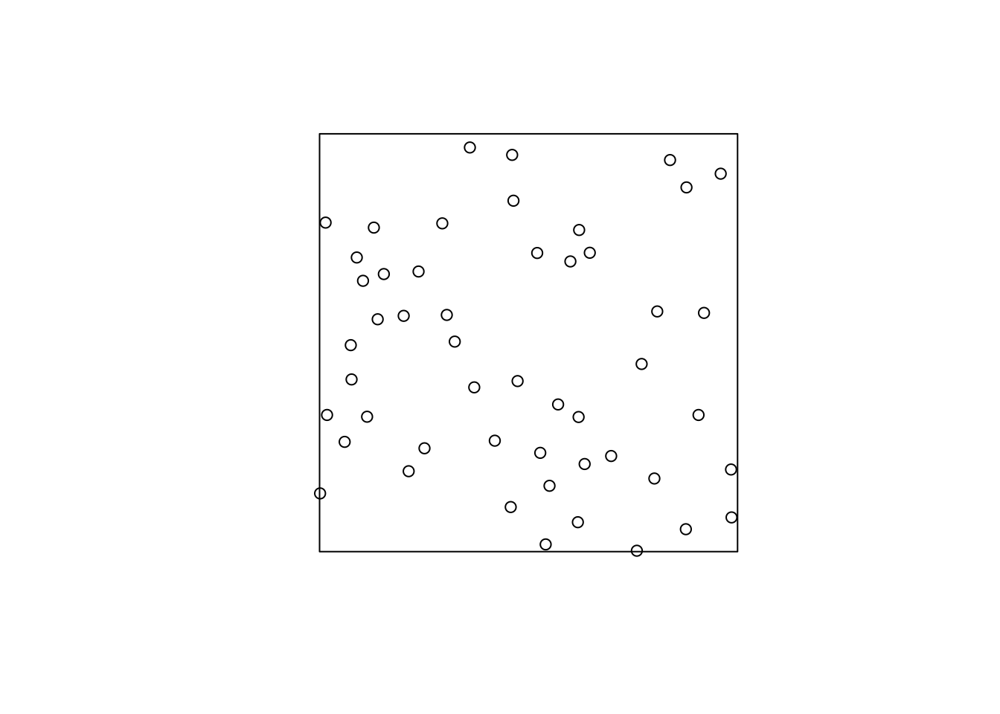
Changing \(\kappa\) and \(r\) will change the event intensity.
1.7.2 Markov point process models
Expanding on the earlier notation we write that a homogeneous Poisson process with intensity \(\lambda > 0\) has intensity \[\lambda(s, x) = \lambda\] where \(s\) is any location in the window W and \(x\) is the set of events.
Then an inhomogeneous Poisson process has conditional intensity \[\lambda(s, x) = \lambda(s)\]. The intensity \(\lambda(s)\) depends on a spatial trend or on a covariate.
There is also a class of Markov point process models that allow for clustering (or regularity) due to event interaction. Markov refers to the fact that the interaction is limited to nearest neighbors. Said another way, a Markov point process generalizes a Poisson process in the case where events are pairwise dependent.
A Markov process with parameters \(\beta > 0\) and \(0 < \gamma < \infty\) with interaction radius \(r > 0\) has conditional intensity \(\lambda(s, x)\) given by \[ \lambda(s, x) = \beta \gamma^{t(s, x)} \] where \(t(s, x)\) is the number of events that lie within a distance \(r\) of location \(s\).
Three cases:
- If \(\gamma = 1\), then \(\lambda(s, x) = \beta\) No interaction between events, \(\beta\) can vary with \(s\).
- If \(\gamma < 1\), then \(\lambda(s, x) < \beta\). Events inhibit nearby events.
- If \(\gamma > 1\), then \(\lambda(s, x) > \beta\). Events encourage nearby events.
Note the distinction between the interaction term \(\gamma\) and the trend term \(\beta\). As we saw earlier in the semester, a similar distinction exists between autocorrelation \(\rho\) and trend \(\beta\) in spatial regression models.
1.7.3 Fitting models to point pattern data
The {spatstat} package contains functions for fitting statistical models to point pattern data. Models can include trend, covariates, and event interactions of any order (interactions are not restricted to pairwise). Models are fit with maximum likelihood and minimum contrast procedures.
The method of minimum contrasts derives a cost function between the theoretical and empirical \(K\) function. Parameter values are those that minimize this cost function.
The ppm() function is used to fit a spatial point pattern model. The syntax has the form ppm(X, formula, interaction, ...) where X is the point pattern object of class ppp, formula describes the systematic (trend and covariate) part of the model, and interaction describes the stochastic dependence between events (e.g., Matern process).
More generally, we write the logarithm of the conditional intensity \(\log[\lambda(s, x)]\) as linear expression with two components.
\[
\log\big[\lambda(s, x)\big] = \theta_1 B(s) + \theta_2 C(s, x)
\]
where the \(\theta\)’s are model parameters that need to be estimated.
The term \(B(s)\) depends only on location so it represents trend and covariate effects. It is the ‘systematic component’ of the model. The term \(C(s, x)\) represents stochastic interactions (dependency) between events.
Recall a plot of the Swedish pine saplings. There was no indication of a trend. That is, no systematic variation in the intensity of saplings.

A plot of the nearest neighborhood distance function indicated some regularity. The regularity appeared at scales between at least 3 and 10 units of distance. Let’s take a look again.
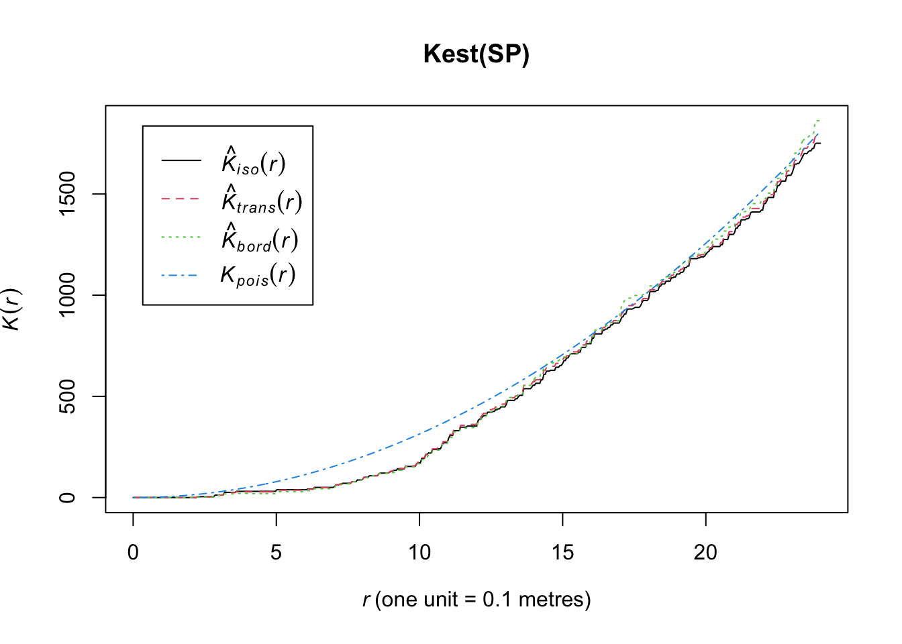
The Strauss process is a simple interaction model. Inhibition is constant with a fixed radius (r) around each event. The amount of inhibition ranges from zero to complete (zero probability of a nearby event). In the case of no inhibition the process is equivalent to a homogeneous Poisson process.
To model the process we set the trend term to a constant (~ 1) and the Strauss interaction radius to 10 units. The rbord = argument specifies a distance from the window for border corrections.
The value for r in the Strauss() function is based on our visual inspection of the plot of Kest(). A value is chosen that represents the distance at which there is the largest departure from a CSR model.
We inspect the model by typing the object name.
## Stationary Strauss process
##
## First order term: beta = 0.07567442
##
## Interaction distance: 10
## Fitted interaction parameter gamma: 0.2752048
##
## Relevant coefficients:
## Interaction
## -1.29024
##
## For standard errors, type coef(summary(x))The first-order term (beta) has a value of .076. This is the intensity of the ‘proposal’ events. Here beta exceeds the average intensity (here .0074) by a factor of ten.
The interaction parameter (gamma) is .275. It is less than one, indicating an inhibition process. The logarithm of gamma, called the interaction coefficient (Interaction), is -1.29. Interaction coefficients less than zero imply inhibition.
A table with the coefficients including the standard errors and uncertainty ranges is obtained with the coef() method.
## Estimate S.E. CI95.lo CI95.hi Ztest Zval
## (Intercept) -2.581315 0.4524077 -3.468018 -1.6946123 *** -5.705728
## Interaction -1.290240 0.2375515 -1.755832 -0.8246475 *** -5.431411We again see the Interaction coefficient along with it’s standard error (S.E.) and the associated 95% uncertainty interval. The ratio of the Interaction coefficient to its standard error is the Zval. A large z-value (in absolute magnitude) translates to a low \(p\)-value and a rejection of the null hypothesis of no interaction between events.
We also see here an estimated value for the (Intercept). It is the logarithm of the beta value, so exp(-2.58) = .076 is the intensity of the proposal events.
The model is interpreted as follows. The process producing the spatial pattern of pine saplings is such that we should see .076 saplings per unit area [unobserved (latent) rate]. But because of event inhibition, where saplings nearby other saplings fail to grow, the number of saplings is reduced to .0074 per unit area. Thus the spatial pattern is suggestive of sibling-sibling interaction. Adults have many off-springs, but only some survive due to limited resources.
Let’s compare this to the maple trees in the Lansing woods dataset (lansing). We extract the events marked as maple and put them in a separate ppp object called MT.
## Planar point pattern: 514 points
## Average intensity 514 points per square unit (one unit = 924 feet)
##
## Coordinates are given to 3 decimal places
## i.e. rounded to the nearest multiple of 0.001 units (one unit = 924 feet)
##
## Window: rectangle = [0, 1] x [0, 1] units
## Window area = 1 square unit
## Unit of length: 924 feetThere are 514 maples over this square region (924 x 924) square feet.
A plot of the tree locations and the local intensity articulates the first-order property of this point pattern data.
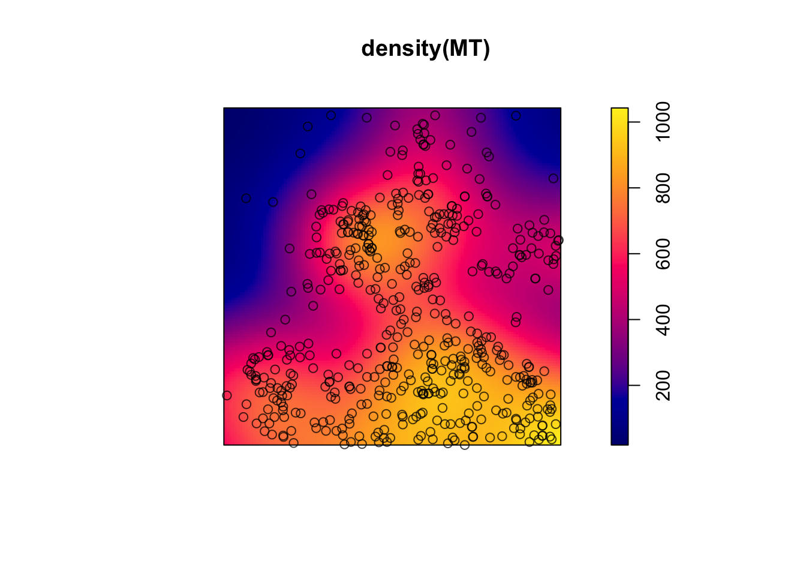
We see there are more maple trees across the southern part of the domain than across the nothern part of the domain.
A plot of the \(G\) function summarizes the second-order properties under the assumption of no trend.
library(dplyr)
G <- Gest(MT)
G.df <- as.data.frame(G) %>%
filter(r < .033) %>%
mutate(r = r * 924)
library(ggplot2)
ggplot(G.df, aes(x = r, y = km)) +
geom_line() +
geom_line(aes(y = theo), color = "blue") +
geom_vline(xintercept = 18.5, lty = 'dashed') +
xlab("Distance (ft)") + ylab("G(r): Cumulative % of distances within a distance r of another maple") +
theme_minimal()
The cumulative event-to-event distances indicate clustering. The empirical curve is above the theoretical curve. For example about 74% of the maple trees are within 18.5 feet of another maple tree. If the process resulted in trees was CSR then only 49% of the trees would be within 18.5 feet of another maple.
Model the event interaction as a Strauss process with interaction distance of .025 units (23 ft).
## Stationary Strauss process
##
## First order term: beta = 301.1416
##
## Interaction distance: 0.025
## Fitted interaction parameter gamma: 1.4718595
##
## Relevant coefficients:
## Interaction
## 0.3865265
##
## For standard errors, type coef(summary(x))
##
## *** Model is not valid ***
## *** Interaction parameters are outside valid range ***Here the first order term beta is 301. It is the ‘latent’ rate of maple trees per unit area. This rate is less than the 514 actual maple trees. The fitted interaction parameter (gamma) is 1.47. It is greater than one as expected since the trees are clustered. The logarithm of gamma is .387.
The model is interpreted as follows. The process producing the maple trees is such that we expect to see about 301 maples. Because of clustering, maples are more likely near other maples, so the number of maples increases to 514 per unit area.
Here the physical explanation may not be about event interaction. As the clustering in the pattern of maple tree locations can be explained by the presence of hickories (cross event interaction).
Note: The Strauss process is for inhibition models. So although we use it here for diagnostics, we need to fit a cluster model (thus the *** Model is not valid *** warning).
For a cluster model the spatial intensity \[\lambda(s) = \kappa \mu(s)\] where \(\kappa\) is the average number of clusters and where \(\mu(s)\) is the spatial varying cluster size (number events per cluster).
Cluster models are fit using the kppm() function. Here we specify the cluster process as clusters = "Thomas". That means each cluster consists of a Poisson number of maple trees, with each tree in the cluster being placed isotropically a distance from the parent tree where smaller distances are more likely based on a Gaussian distribution.
## Stationary cluster point process model
## Fitted to point pattern dataset 'MT'
## Fitted by minimum contrast
## Summary statistic: K-function
##
## Uniform intensity: 514
##
## Cluster model: Thomas process
## Fitted cluster parameters:
## kappa scale
## 21.74724000 0.06752791
## Mean cluster size: 23.63518 pointsHere \(\kappa\) is 21.75 and \(\bar \mu(s)\) (mean cluster size) is 23.64. The product of these two parameters is the number of events. It is a parent-child process. The number of parents is about 22. The distribution of the parents can be described as CSR. Each parent produces about 24 offspring distributed randomly about the location of the parent within a characteristic distance. Again, the physical process might be different from the point pattern process used to describe it.
The cluster scale parameter is \(\sigma^2\). The cluster scale indicates the characteristic size (area units) of the cluster.
A plot() method verifies that the cluster process statistically ‘explains’ the spatial correlation.
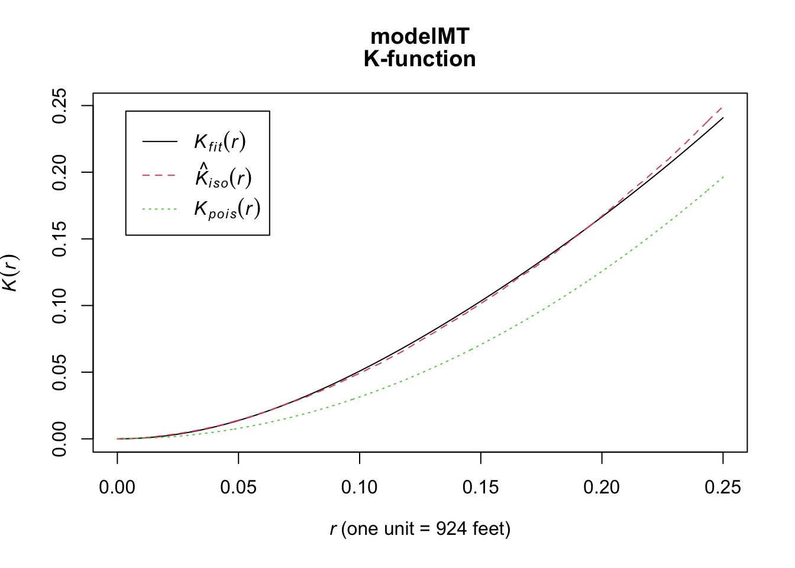
This is seen by the fact that the model fit (black line) is very close to the cluster process line (red line).
The spatial scale of the clustering is visualized with the what = "cluster" argument.
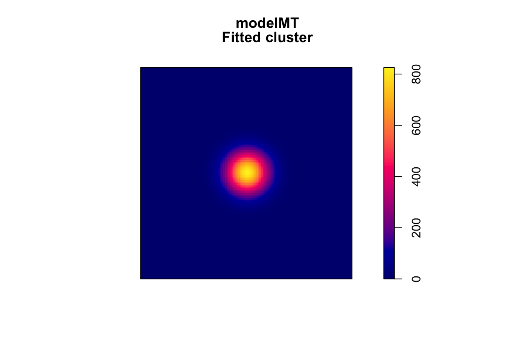
1.7.4 Steps in fitting a point process model
- Analyze/plot the first and second order characteristics of the event pattern. The intensity and nearest neighbor stastistics.
- Select a spatial point process model (trend, interaction distance, etc) for pattern, informed by the results of step 1
- Fit the model to the event pattern
- Assess the model’s goodness-of-fit by running simulations and comparing the simulated point patterns with the original point pattern
The model should be capable of generating data that looks like the actual data used to fit the model.
The development of spatial point process methods has largely been theory driven (not by actual problems/data). More work needs to be done to apply the theory to environmental data with spatial heterogeneity, properties at the individual level (marks), and with time information.
1.7.5 Model diagnostics
The envelope() function computes the upper and lower values of a nearest-neighbor statistic from simulated realizations of a point pattern model. This is used as a test of the goodness-of-fit for the model.
We start with the pine sapling model. Here we use the \(L\) function (variance stablized Ripley’s \(K\)) estimated with Lest().
## Generating 78 simulated realisations of fitted Gibbs model (39 to estimate the
## mean and 39 to calculate envelopes) ...
## 1, 2, 3, 4, 5, 6, 7, 8, 9, 10, 11, 12, 13, 14, 15, 16, 17, 18, 19, 20, 21, 22, 23, 24, 25, 26, 27, 28, 29, 30, 31, 32, 33, 34, 35, 36, 37, 38, 39, 40,
## 41, 42, 43, 44, 45, 46, 47, 48, 49, 50, 51, 52, 53, 54, 55, 56, 57, 58, 59, 60, 61, 62, 63, 64, 65, 66, 67, 68, 69, 70, 71, 72, 73, 74, 75, 76, 77, 78.
##
## Done.
The empirical curve is in black and the model is in red. The kink is the result of specifying 10 units for the interaction distance. From the results we conclude that an inhibition model is sufficient for describing the pine sapling data.
What about the maple trees? Our model is saved as modelMT.
## Generating 78 simulated realisations of fitted cluster model (39 to estimate
## the mean and 39 to calculate envelopes) ...
## 1, 2, 3, 4, 5, 6, 7, 8, 9, 10, 11, 12, 13, 14, 15, 16, 17, 18, 19, 20, 21, 22, 23, 24, 25, 26, 27, 28, 29, 30, 31, 32, 33, 34, 35, 36, 37, 38, 39, 40,
## 41, 42, 43, 44, 45, 46, 47, 48, 49, 50, 51, 52, 53, 54, 55, 56, 57, 58, 59, 60, 61, 62, 63, 64, 65, 66, 67, 68, 69, 70, 71, 72, 73, 74, 75, 76, 77, 78.
##
## Done.
In the case of the maple trees, a cluster model is sufficient. However, it is not satisfying since we know about the cross correlation with hickories. Also there appears to be more trees in the south. So we are not finished modeling these data.
Here we model the intensity as a function of distance in the north-south direction.
## Inhomogeneous cluster point process model
## Fitted to point pattern dataset 'MT'
## Fitted by minimum contrast
## Summary statistic: inhomogeneous K-function
##
## Log intensity: ~y
##
## Fitted trend coefficients:
## (Intercept) y
## 6.894933 -1.486252
##
## Cluster model: Thomas process
## Fitted cluster parameters:
## kappa scale
## 26.95657283 0.05358307
## Mean cluster size: [pixel image]This is a inhomogeneous cluster point process model. The logarithm of the intensity depends on y. The coefficient is negative as expected with fewer trees as we move north (increasing y). There is one spatial unit in the north-south direction so we interpret this coefficient to mean there are 77% fewer trees in the north than in the south [1 - exp(-1.486) = .77].
The average number of clusters (kappa) increases to about 27. The cluster scale parameter (sigma), indicating the characteristic size of the cluster (in distance units) decreases to .0536. That makes sense since some of the event-to-event distances are accounted for by the trend term.
To examine if spatial covariates are needed in the case of inhibition models we use the diagnose.ppm() function to plot the residuals. Returning to our pine sapling model.
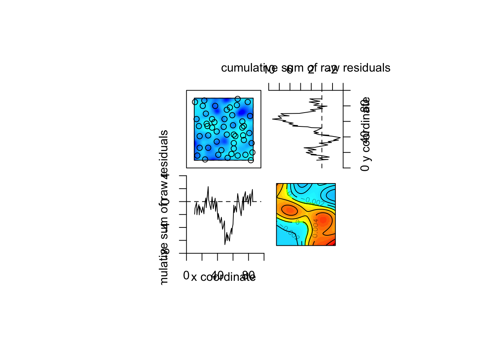
## Model diagnostics (raw residuals)
## Diagnostics available:
## four-panel plot
## mark plot
## smoothed residual field
## x cumulative residuals
## y cumulative residuals
## sum of all residuals
## sum of raw residuals in clipped window = -4.461e-11
## area of clipped window = 6080
## quadrature area = 6333
## range of smoothed field = [-0.007589, 0.008798]The point pattern data is shown in the top-left panel along with an estimate of the local spatial intensity using kernel density smoothing (blue shading). A plot of the residuals is shown in the lower-right panel. Blue indicates over prediction by the model and orange indicates under prediction. The observed occurrence of saplings is underestimated in the southeast and west-central part of the domain but the departures are not large nor are they systematic.
The margin plots show the cumulative residuals in the north-south direction (top right) and east-west direction (bottom left). Imagine a vertical line (in the case of the x-coordinate) that sweeps from left to right across the window. The progressive total residual to the left of the line is plotted against the position of the line. The idea is to detect a lurking variable not included in the model. Negative residuals begin to accumulate at about 50 but they are not large.
Given a point process model fitted to a point pattern, the function qqplot.ppm produces a quantile-quantile (Q-Q) plot based on residuals from the model. The residuals from the model are plotted (‘data’) as quantiles against quantiles from the theoretical distribution, which are estimated using simulation.
For a good-fitting model the points should be near the diagonal (between the uncertainty lines).
## Extracting model information...Evaluating trend...done.
## Simulating 39 realisations... 1, 2, 3, 4, 5, 6, 7, 8, 9, 10, 11, 12, 13, 14, 15, 16, 17, 18, 19, 20, 21, 22, 23, 24, 25, 26, 27, 28, 29, 30, 31, 32, 33, 34, 35, 36, 37, 38, 39.
##
## Diagnostic info:
## simulated patterns contained an average of 73.0769230769231 points.
## Calculating quantiles...averaging.....Done.
This is indeed the case with this model for the pine sapling dataset.
We might be done at this point. Let’s simulate a fake point pattern data using the model.

It looks reasonable.
1.7.6 Example 1: Tropical trees
If the intensity of events depends on spatial location as it does with the maple trees we can include a trend and covariate term in the model.
For a trend term, the formula ~ x corresponds to a spatial trend of the form \(\lambda(x) = \exp(a + bx)\), while ~ x + y corresponds to \(\lambda(x, y) = \exp(a + bx + cy)\) where x, y are the spatial coordinates. For a covariate term, the formula is ~ covariate1 + covariate2.
Consider the bei data from the {spatstat} package containing the locations of 3605 trees in a tropical rain forest.
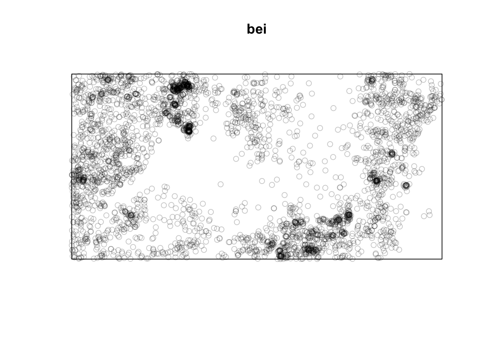
Accompanied by covariate data giving the elevation (altitude) and slope of elevation in the study region. The data bei.extra is a list containing two pixel images, elev (elevation in meters) and grad (norm of elevation gradient). These pixel images are objects of class im, see im.object.

Compute and plot the \(L\) function to examine spatial autocorrelation. The method computes the \(L\) function from data generated by a homogeneous Poisson model (nsim = 39 different data sets) and compares it to the L function computed from the actual data. By default the gray area includes the maximum and minimum value of \(L\) at each radius from the generated data.
## Generating 39 simulations of CSR ...
## 1, 2, 3, 4, 5, 6, 7, 8, 9, 10, 11, 12, 13, 14, 15, 16, 17, 18, 19, 20, 21, 22, 23, 24, 25, 26, 27, 28, 29, 30, 31, 32, 33, 34, 35, 36, 37, 38, 39.
##
## Done.
There is significant clustering indicated by the black line far above the CSR line. There are more trees in the vicinity (r = 0 to 100 m) of other trees than expected by chance.
But how much of the clustering is due to terrain (elevation and slope)?.
Fit a model that includes elevation and gradient as covariates. This is done with the trend = argument naming the image variables and including the argument covariates = indicating a data frame or, in this case, a list whose entries are image functions.
We check to see if the covariates are significant to the model.
## Point process model
## Fitting method: maximum likelihood (Berman-Turner approximation)
## Model was fitted using glm()
## Algorithm converged
## Call:
## ppm.ppp(Q = bei, trend = ~elev + grad, covariates = bei.extra)
## Edge correction: "border"
## [border correction distance r = 0 ]
## --------------------------------------------------------------------------------
## Quadrature scheme (Berman-Turner) = data + dummy + weights
##
## Data pattern:
## Planar point pattern: 3604 points
## Average intensity 0.00721 points per square metre
## Window: rectangle = [0, 1000] x [0, 500] metres
## Window area = 5e+05 square metres
## Unit of length: 1 metre
##
## Dummy quadrature points:
## 130 x 130 grid of dummy points, plus 4 corner points
## dummy spacing: 7.692308 x 3.846154 metres
##
## Original dummy parameters: =
## Planar point pattern: 16904 points
## Average intensity 0.0338 points per square metre
## Window: rectangle = [0, 1000] x [0, 500] metres
## Window area = 5e+05 square metres
## Unit of length: 1 metre
## Quadrature weights:
## (counting weights based on 130 x 130 array of rectangular tiles)
## All weights:
## range: [1.64, 29.6] total: 5e+05
## Weights on data points:
## range: [1.64, 14.8] total: 41000
## Weights on dummy points:
## range: [1.64, 29.6] total: 459000
## --------------------------------------------------------------------------------
## FITTED MODEL:
##
## Nonstationary Poisson process
##
## ---- Intensity: ----
##
## Log intensity: ~elev + grad
## Model depends on external covariates 'elev' and 'grad'
## Covariates provided:
## elev: im
## grad: im
##
## Fitted trend coefficients:
## (Intercept) elev grad
## -8.56355220 0.02143995 5.84646680
##
## Estimate S.E. CI95.lo CI95.hi Ztest Zval
## (Intercept) -8.56355220 0.341113849 -9.23212306 -7.89498134 *** -25.104675
## elev 0.02143995 0.002287866 0.01695581 0.02592408 *** 9.371155
## grad 5.84646680 0.255781018 5.34514522 6.34778838 *** 22.857313
##
## ----------- gory details -----
##
## Fitted regular parameters (theta):
## (Intercept) elev grad
## -8.56355220 0.02143995 5.84646680
##
## Fitted exp(theta):
## (Intercept) elev grad
## 1.909398e-04 1.021671e+00 3.460097e+02The output shows that both elevation and elevation gradient are significant in explaining the spatial varying intensity of the trees.
Since the conditional intensity is on a log scale we interpret the elevation coefficient as follows: For a one meter increase in elevation the local spatial intensity increases by a amount equal to exp(.021) or 2%.
Check how well the model fits the data. This is done with the envelope() function using the model object as the first argument. The second argument is the name of the distance function. Here the variance stablized Ripley’s \(K\) function (\(L\)).
The method computes the \(L\) function from data generated by the model (nsim = 39 different data sets) and compares it to the \(L\) function computed from the actual data. By default the gray area includes the maximum and minimum value of \(L\) at each radius from the generated data.
## Generating 78 simulated realisations of fitted Poisson model (39 to estimate
## the mean and 39 to calculate envelopes) ...
## 1, 2, 3, 4, 5, 6, 7, 8, 9, 10, 11, 12, 13, 14, 15, 16, 17, 18, 19, 20, 21, 22, 23, 24, 25, 26, 27, 28, 29, 30, 31, 32, 33, 34, 35, 36, 37, 38, 39, 40,
## 41, 42, 43, 44, 45, 46, 47, 48, 49, 50, 51, 52, 53, 54, 55, 56, 57, 58, 59, 60, 61, 62, 63, 64, 65, 66, 67, 68, 69, 70, 71, 72, 73, 74, 75, 76, 77, 78.
##
## Done.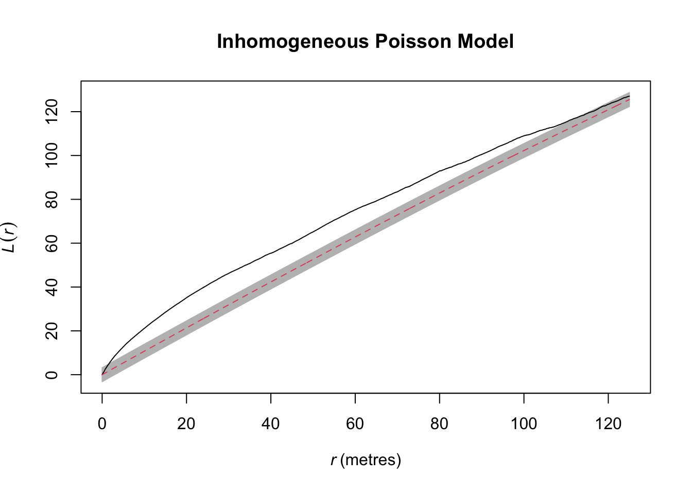
Better, but not by much.
An improvement is made by adding a cluster process to the model. This is done with the function kppm().
modelBEI.kppm <- kppm(bei,
trend = ~ elev + grad,
covariates = bei.extra,
clusters = "Thomas")
E <- envelope(modelBEI.kppm, Lest, nsim = 39,
global = TRUE,
correction = "border")## Generating 78 simulated realisations of fitted cluster model (39 to estimate
## the mean and 39 to calculate envelopes) ...
## 1, 2, 3, 4, 5, 6, 7, 8, 9, 10, 11, 12, 13, 14, 15, 16, 17, 18, 19, 20, 21, 22, 23, 24, 25, 26, 27, 28, 29, 30, 31, 32, 33, 34, 35, 36, 37, 38, 39, 40,
## 41, 42, 43, 44, 45, 46, 47, 48, 49, 50, 51, 52, 53, 54, 55, 56, 57, 58, 59, 60, 61, 62, 63, 64, 65, 66, 67, 68, 69, 70, 71, 72, 73, 74, 75, 76, 77, 78.
##
## Done.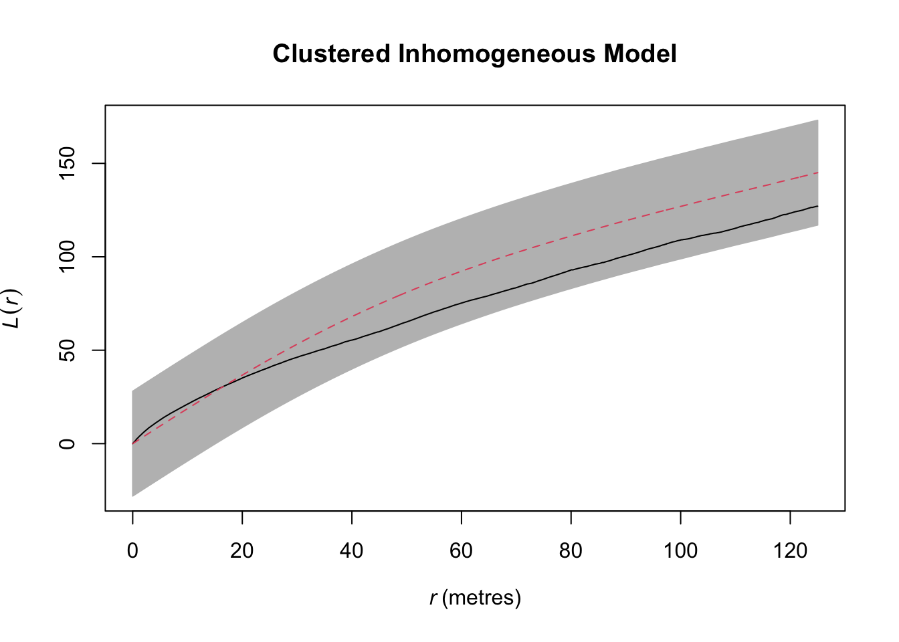
The uncertainty band is much wider. The empirical curve fits completely inside the band. The inhomogeneous cluster process appears to be an adequate description of the point pattern data.
1.7.7 Example 2: Violent tornado occurrence
The vast majority of tornadoes have winds of less than 60 m/s (120 mph). A violent tornado, with winds exceeding 90 m/s, is rare. Most of these potentially destructive and deadly tornadoes occur from rotating thunderstorms called supercells, with formation contingent on local (storm-scale) meteorological conditions.
The long-term risk of a tornado at a given location is assessed using historical records, however, the rarity of the most violent tornadoes make these rate estimates unstable. Here we use the more stable rate estimates from the larger set of less violent tornadoes to create more reliable estimates of violent tornado frequency.
For this exercise we restrict our attention to tornadoes occurring in Kansas over the period 1954–2018.
library(sf)
library(dplyr)
Torn.sf <- st_read(dsn = "1950-2018-torn-initpoint") %>%
st_transform(crs = 3082) %>%
filter(mag >= 0, yr >= 1954) %>%
mutate(EF = mag,
EFf = as.factor(EF)) %>%
dplyr::select(yr, EF, EFf)## Reading layer `1950-2018-torn-initpoint' from data source `/Users/jelsner/Desktop/Projects/ASSFG-Book/1950-2018-torn-initpoint' using driver `ESRI Shapefile'
## Simple feature collection with 63645 features and 22 fields
## geometry type: POINT
## dimension: XY
## bbox: xmin: -163.53 ymin: 18.13 xmax: -64.9 ymax: 61.02
## CRS: 4326library(USAboundaries)
library(maptools)
KS.sfc <- us_states(states = "Kansas") %>%
st_transform(crs = st_crs(Torn.sf))
Torn.sf <- Torn.sf[KS.sfc, ]Create a owin and ppp objects. Note that although we’ve already subsetted by Kansas tornadoes above we need to subset on the ppp object to assign the KS boundary as the analysis window.
KS.sp <- as(KS.sfc, "Spatial")
KS.win <- as(KS.sp, 'owin')
Torn.sp <- as(Torn.sf, "Spatial")
T.ppp <- as(Torn.sp["EF"], "ppp")
T.ppp <- T.ppp[KS.win]
summary(T.ppp)## Marked planar point pattern: 4079 points
## Average intensity 1.890201e-08 points per square unit
##
## *Pattern contains duplicated points*
##
## Coordinates are given to 1 decimal place
## i.e. rounded to the nearest multiple of 0.1 units
##
## marks are numeric, of type 'double'
## Summary:
## Min. 1st Qu. Median Mean 3rd Qu. Max.
## 0.0000 0.0000 0.0000 0.6122 1.0000 5.0000
##
## Window: polygonal boundary
## single connected closed polygon with 170 vertices
## enclosing rectangle: [1317675.9, 1980294.8] x [7114969, 7458570] units
## (662600 x 343600 units)
## Window area = 2.15797e+11 square units
## Fraction of frame area: 0.948There are 4079 tornadoes over the period with an average intensity of 189 per 100 square km (multiply the average intensity in square meters by 10^10).
Here we separate the point pattern data into non-violent tornadoes and violent tornadoes. The non-violent tornadoes include those with an EF rating of 0, 1, 2 or 3. The violent tornadoes include those with an EF rating of 4 or 5.
## Planar point pattern: 4039 points
## Average intensity 1.871665e-08 points per square unit
##
## *Pattern contains duplicated points*
##
## Coordinates are given to 1 decimal place
## i.e. rounded to the nearest multiple of 0.1 units
##
## Window: polygonal boundary
## single connected closed polygon with 170 vertices
## enclosing rectangle: [1317675.9, 1980294.8] x [7114969, 7458570] units
## (662600 x 343600 units)
## Window area = 2.15797e+11 square units
## Fraction of frame area: 0.948## Planar point pattern: 40 points
## Average intensity 1.853593e-10 points per square unit
##
## Coordinates are given to 1 decimal place
## i.e. rounded to the nearest multiple of 0.1 units
##
## Window: polygonal boundary
## single connected closed polygon with 170 vertices
## enclosing rectangle: [1317675.9, 1980294.8] x [7114969, 7458570] units
## (662600 x 343600 units)
## Window area = 2.15797e+11 square units
## Fraction of frame area: 0.948The spatial intensity of the non-violent tornadoes is 187 per 100 sq km. The spatial intensity of the violent tornadoes is 1.9 per 100 sq km.
Locations of the violent tornadoes.
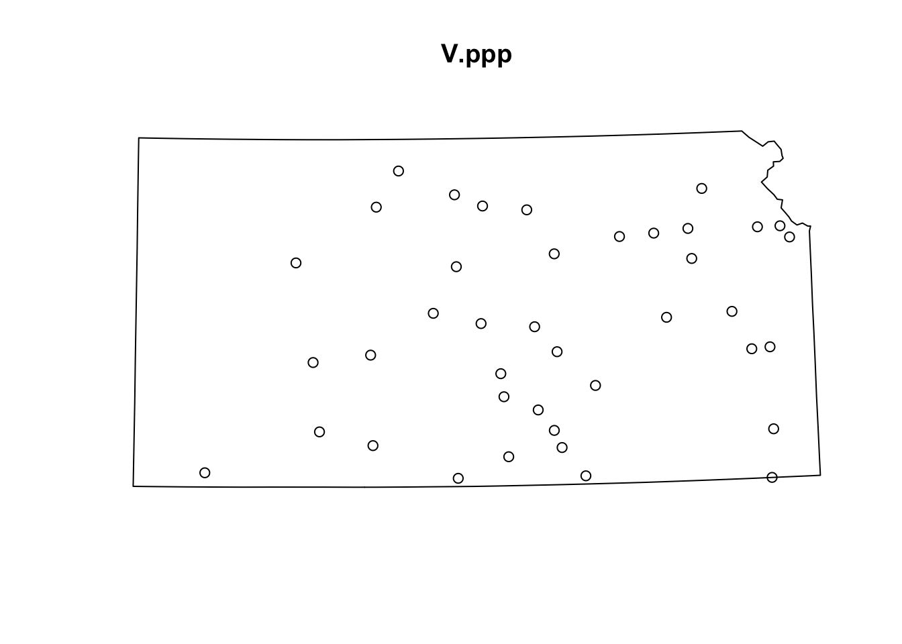
In Lesson 14 we saw that the spatial intensity of tornado reports was a function of distance to nearest city. So we want to include this as a confounding variable. Import the data, set the CRS, and transform the CRS to match that of the tornadoes. Exclude cities with fewer than 1000 people.
download.file("http://myweb.fsu.edu/jelsner/temp/data/ci08au12.zip",
"ci08au12.zip")
unzip("ci08au12.zip")
C.sf <- st_read(dsn = ".",
layer = "ci08au12",
quiet = TRUE) %>%
st_set_crs(4326) %>%
st_transform(crs = st_crs(Torn.sf)) %>%
dplyr::filter(POP_1990 >= 1000)Then create a ppp object of events from the city/town locations. First create an S4 class spatial data frame and convert this data frame to a ppp object before removing the marks. Then subset the events by the window.

Next create a distance map of the city/town locations using the distmap() function.
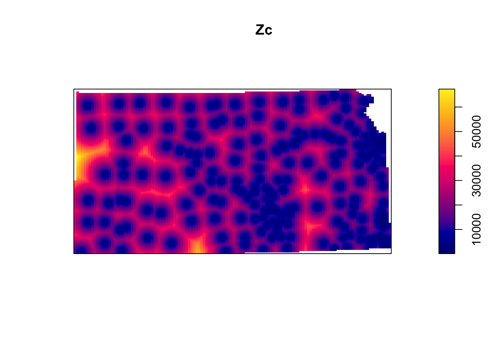
The resulting object an im class indicating a pixeled image. Pixel values are distances is meters. Blue indicates locations that are less than 20 km from a city or town with a population of at least 1000.
Our interest lies with the distance to nearest non-violent tornado. We check to see if this might be a useful variable in a model.
Znv <- distmap(NV.ppp)
rhat <- rhohat(V.ppp, Znv,
adjust = 1.3,
smoother = "kernel",
method = "transform")
dist <- rhat$Znv
rho <- rhat$rho
hi <- rhat$hi
lo <- rhat$lo
Rho.df <- data.frame(dist = dist, rho = rho, hi = hi, lo = lo)
ggplot(Rho.df) +
geom_ribbon(aes(x = dist, ymin = lo, ymax = hi), alpha = .3) +
geom_line(aes(x = dist, y = rho), col = "black") +
ylab("Spatial intensity of violent tornadoes") + xlab("Distance from nearest non-violent tornado (m)") +
theme_minimal()
This shows that regions that get non-violent tornadoes also see higher rates of violent tornadoes.
So our model includes two trend terms.
## Estimate S.E. CI95.lo CI95.hi Ztest
## (Intercept) -2.087422e+01 3.784490e-01 -2.161597e+01 -2.013247e+01 ***
## Zc -4.614373e-05 1.957117e-05 -8.450252e-05 -7.784945e-06 *
## Znv -2.389478e-04 8.986687e-05 -4.150836e-04 -6.281195e-05 **
## Zval
## (Intercept) -55.157281
## Zc -2.357740
## Znv -2.658908As expected the model shows fewer violent tornadoes with increasing distance from the nearest city (negative coefficient on Zc) and fewer violent tornadoes with increasing distance from a non-violent tornado (negative coefficient on Znv).
Since the spatial unit is meters the coefficient of -4.6e-05 is interpreted as a [1 - exp(-.046)] * 100% or 4% decrease in violent tornado reports per kilometer of distance from a city. Similarly the coefficient on distance from nearest non-violent tornado is interpreted as a 21% decrease in violent tornado reports per kilometer of distance from nearest non-violent tornado.
We check if there is any residual nearest neighbor correlation.
## Generating 78 simulated realisations of fitted Poisson model (39 to estimate
## the mean and 39 to calculate envelopes) ...
## 1, 2, 3, 4, 5, 6, 7, 8, 9, 10, 11, 12, 13, 14, 15, 16, 17, 18, 19, 20, 21, 22, 23, 24, 25, 26, 27, 28, 29, 30, 31, 32, 33, 34, 35, 36, 37, 38, 39, 40,
## 41, 42, 43, 44, 45, 46, 47, 48, 49, 50, 51, 52, 53, 54, 55, 56, 57, 58, 59, 60, 61, 62, 63, 64, 65, 66, 67, 68, 69, 70, 71, 72, 73, 74, 75, 76, 77, 78.
##
## Done.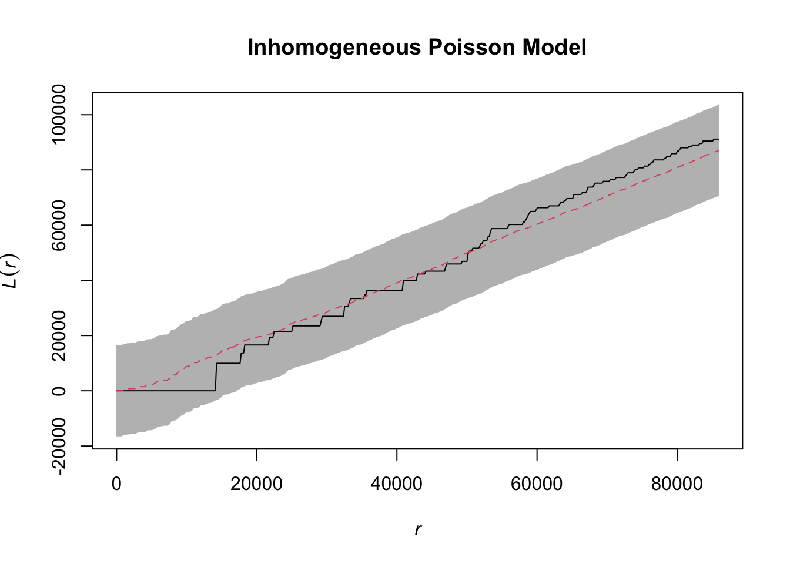
There appears to be a bit of regularity at smaller scales. The empirical curve (black line) falls slightly below the model (dashed red line). There are fewer nearby violent tornadoes than one would expect.
To see if this is statistically significant, we add an inhibition process to the model.
model2 <- ppm(V.ppp,
trend = ~ Zc + Znv,
covariates = list(Zc = Zc, Znv = Znv),
interaction = Strauss(r = 40000))
coef(summary(model2))## Estimate S.E. CI95.lo CI95.hi Ztest
## (Intercept) -2.049386e+01 6.983113e-01 -2.186253e+01 -1.912520e+01 ***
## Zc -3.236850e-05 2.329140e-05 -7.801880e-05 1.328180e-05
## Znv -2.643220e-04 9.913796e-05 -4.586289e-04 -7.001520e-05 **
## Interaction -4.753741e-01 4.336389e-01 -1.325291e+00 3.745425e-01
## Zval
## (Intercept) -29.347750
## Zc -1.389719
## Znv -2.666204
## Interaction -1.096244We see a negative sign on the interaction coefficient as expected from the above plot, but the standard error is relatively large so it is not significant.
Remove the inhibition process and add a trend term in the east-west direction.
model3 <- ppm(V.ppp,
trend = ~ Zc + Znv + x,
covariates = list(Zc = Zc, Znv = Znv))
coef(summary(model3))## Estimate S.E. CI95.lo CI95.hi Ztest
## (Intercept) -2.434688e+01 1.753031e+00 -2.778276e+01 -2.091100e+01 ***
## Zc -3.224884e-05 2.071846e-05 -7.285627e-05 8.358595e-06
## Znv -2.523907e-04 8.943257e-05 -4.276753e-04 -7.710610e-05 **
## x 1.967285e-06 9.548089e-07 9.589369e-08 3.838676e-06 *
## Zval
## (Intercept) -13.888447
## Zc -1.556527
## Znv -2.822134
## x 2.060396There is a significant eastward trend but it appears to confound the distance to city term. Why is this?
Plot simulated data.

## Generating 6 simulated patterns ...1, 2, 3, 4, 5, 6.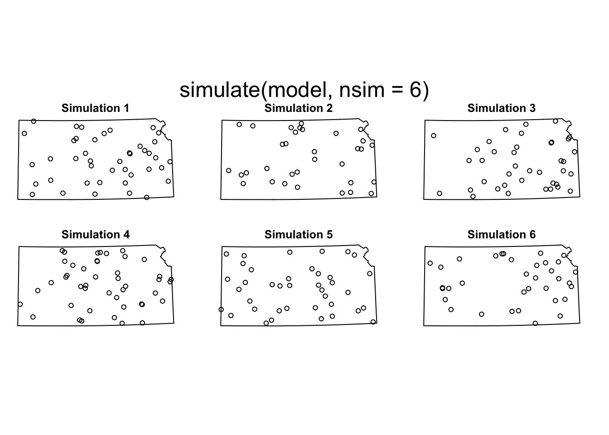
1.7.8 Example 3: Does terrain roughness affect tornado occurrence rates?
Most thunderstorms fail to produce tornadoes. Tornado initiation is sensitive to an interplay of processes across a range of spatial scales, including the scale of a few hundred meters where the air flow near the ground is converging inward toward the tornado. It stands to reason that the underlying surface can affect this convergent inflow.
To make the analysis and modeling run faster we consider only Kansas tornadoes with an EF2 or higher rating.
## Planar point pattern: 626 points
## Average intensity 2.900873e-09 points per square unit
##
## *Pattern contains duplicated points*
##
## Coordinates are given to 1 decimal place
## i.e. rounded to the nearest multiple of 0.1 units
##
## Window: polygonal boundary
## single connected closed polygon with 170 vertices
## enclosing rectangle: [1317675.9, 1980294.8] x [7114969, 7458570] units
## (662600 x 343600 units)
## Window area = 2.15797e+11 square units
## Fraction of frame area: 0.948There are 626 tornadoes with an average intensity of 29 per 100 sq. km.
Plot the spatial varying intensity.
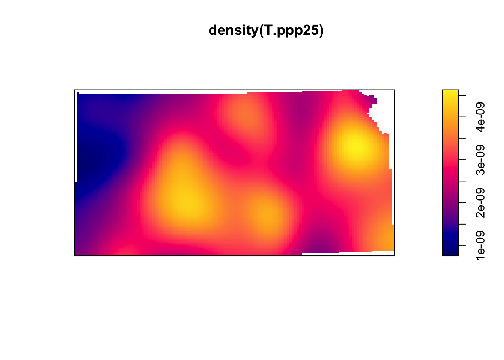
To quantify the relationship between distance to city and tornado report density we use a model.
## Nonstationary Poisson process
##
## Log intensity: ~Zc
##
## Fitted trend coefficients:
## (Intercept) Zc
## -1.907438e+01 -3.687080e-05
##
## Estimate S.E. CI95.lo CI95.hi Ztest
## (Intercept) -1.907438e+01 7.934728e-02 -1.922990e+01 -1.891886e+01 ***
## Zc -3.687080e-05 4.763165e-06 -4.620644e-05 -2.753517e-05 ***
## Zval
## (Intercept) -240.391099
## Zc -7.740821As expected the model shows a decreasing trend with increasing distance from cities (negative value on the Zc coefficient). The value is on the log scale so we do some arithmetic.
## Zc
## 3.619935The coefficient is interpreted as a 3.7% decrease in the number of tornado reports per kilometer of distance from a city (on average).
Can we do better? Statistically: is the model adequate? Here we check model adequacy by examining model residuals against the assumption of homogeneous Poisson.
## Generating 78 simulated realisations of fitted Poisson model (39 to estimate
## the mean and 39 to calculate envelopes) ...
## 1, 2, 3, 4, 5, 6, 7, 8, 9, 10, 11, 12, 13, 14, 15, 16, 17, 18, 19, 20, 21, 22, 23, 24, 25, 26, 27, 28, 29, 30, 31, 32, 33, 34, 35, 36, 37, 38, 39, 40,
## 41, 42, 43, 44, 45, 46, 47, 48, 49, 50, 51, 52, 53, 54, 55, 56, 57, 58, 59, 60, 61, 62, 63, 64, 65, 66, 67, 68, 69, 70, 71, 72, 73, 74, 75, 76, 77, 78.
##
## Done.
We find that, after accounting for distance from nearest town, there is a tendency for tornado reports to cluster at all distances.
1.7.8.1 Elevation and elevation roughness as a covariates
Elevation might be a factor in tornado occurrence rates. In particular the roughness of the underlying surface might make some areas more or less prone to tornadoes. Here we investigate this possibility using elevation data.
Digital elevation data are available from http://www.viewfinderpanoramas.org. The data has been uploaded to my website. Download and unzip the data.
download.file(url = "http://myweb.fsu.edu/jelsner/temp/data/15-H.tif.zip",
destfile = "15-H.tif.zip")
unzip("15-H.tif.zip")Import the elevation raster and crop it to the extent of Kansas.
library(raster)
Elev <- raster("15-H.tif")
KS.sp2 <- spTransform(KS.sp, CRS(projection(Elev)))
Elev <- crop(Elev, KS.sp2)Map the elevation.
library(tmap)
tm_shape(Elev) +
tm_raster() +
tm_shape(KS.sp2) +
tm_borders() +
tm_layout(title = "Elevation (m)",
legend.outside = TRUE)
Get elevation roughness using the terrain() function from the raster package. Use the projectRaster() function to change the native projection to the projection of the tornado data. This takes a few seconds since the projection is not conformal and the grid spacing needs to be preserved.
TR <- terrain(Elev, opt = 'roughness')
ElevP <- projectRaster(Elev, crs = st_crs(Torn.sf)$proj4string)
TRP <- projectRaster(TR, crs = st_crs(Torn.sf)$proj4string)
#writeRaster(ElevP, filename = "ElevP")
#writeRaster(TRP, filename = "TRP")Read projected rasters since the projectRaster() function did not work in RStudio Cloud.
Create image objects from the elevation and roughness rasters. First convert the rasters to a S4 class spatial grid data frame.
Elev.grd <- as(ElevP, "SpatialGridDataFrame")
TR.grd <- as(TRP, "SpatialGridDataFrame")
El <- as(Elev.grd, "im")
Tr <- as(TR.grd, "im")Model the tornado events.
model1 <- ppm(T.ppp25,
trend = ~ Zc + El + Tr,
covariates = list(Zc = Zc, El = El, Tr = Tr))
summary(model1)## Point process model
## Fitting method: maximum likelihood (Berman-Turner approximation)
## Model was fitted using glm()
## Algorithm converged
## Call:
## ppm.ppp(Q = T.ppp25, trend = ~Zc + El + Tr, covariates = list(Zc = Zc,
## El = El, Tr = Tr))
## Edge correction: "border"
## [border correction distance r = 0 ]
## --------------------------------------------------------------------------------
## Quadrature scheme (Berman-Turner) = data + dummy + weights
##
## Data pattern:
## Planar point pattern: 626 points
## Average intensity 2.9e-09 points per square unit
## Window: polygonal boundary
## single connected closed polygon with 170 vertices
## enclosing rectangle: [1317675.9, 1980294.8] x [7114969, 7458570] units
## (662600 x 343600 units)
## Window area = 2.15797e+11 square units
## Fraction of frame area: 0.948
##
## Dummy quadrature points:
## 64 x 64 grid of dummy points, plus 4 corner points
## dummy spacing: 10353.421 x 5368.763 units
##
## Original dummy parameters: =
## Planar point pattern: 3950 points
## Average intensity 1.83e-08 points per square unit
## Window: polygonal boundary
## single connected closed polygon with 170 vertices
## enclosing rectangle: [1317675.9, 1980294.8] x [7114969, 7458570] units
## (662600 x 343600 units)
## Window area = 2.15797e+11 square units
## Fraction of frame area: 0.948
## Quadrature weights:
## (counting weights based on 64 x 64 array of rectangular tiles)
## All weights:
## range: [4440000, 55600000] total: 2.16e+11
## Weights on data points:
## range: [4440000, 27800000] total: 1.59e+10
## Weights on dummy points:
## range: [6800000, 55600000] total: 2e+11
## --------------------------------------------------------------------------------
## FITTED MODEL:
##
## Nonstationary Poisson process
##
## ---- Intensity: ----
##
## Log intensity: ~Zc + El + Tr
## Model depends on external covariates 'Zc', 'El' and 'Tr'
## Covariates provided:
## Zc: im
## El: im
## Tr: im
##
## Fitted trend coefficients:
## (Intercept) Zc El Tr
## -1.863231e+01 -2.918036e-05 -6.657957e-04 -1.578727e-02
##
## Estimate S.E. CI95.lo CI95.hi Ztest
## (Intercept) -1.863231e+01 1.311762e-01 -1.888941e+01 -1.837521e+01 ***
## Zc -2.918036e-05 5.167045e-06 -3.930758e-05 -1.905314e-05 ***
## El -6.657957e-04 1.916568e-04 -1.041436e-03 -2.901552e-04 ***
## Tr -1.578727e-02 5.295607e-03 -2.616647e-02 -5.408071e-03 **
## Zval
## (Intercept) -142.040316
## Zc -5.647398
## El -3.473895
## Tr -2.981201
##
## ----------- gory details -----
##
## Fitted regular parameters (theta):
## (Intercept) Zc El Tr
## -1.863231e+01 -2.918036e-05 -6.657957e-04 -1.578727e-02
##
## Fitted exp(theta):
## (Intercept) Zc El Tr
## 8.092655e-09 9.999708e-01 9.993344e-01 9.843367e-01## [1] 25801.44## [1] 25787.91## [1] 0.02799492| diff | interpretation |
|---|---|
| 1 | huge |
| .1 | large |
| .01 | good |
| .001 | okay |
So we conclude that model1 is an improvement over model0 which is an improvement over a CSR.
Diagnostics.
## Generating 78 simulated realisations of fitted Poisson model (39 to estimate
## the mean and 39 to calculate envelopes) ...
## 1, 2, 3, 4, 5, 6, 7, 8, 9, 10, 11, 12, 13, 14, 15, 16, 17, 18, 19, 20, 21, 22, 23, 24, 25, 26, 27, 28, 29, 30, 31, 32, 33, 34, 35, 36, 37, 38, 39, 40,
## 41, 42, 43, 44, 45, 46, 47, 48, 49, 50, 51, 52, 53, 54, 55, 56, 57, 58, 59, 60, 61, 62, 63, 64, 65, 66, 67, 68, 69, 70, 71, 72, 73, 74, 75, 76, 77, 78.
##
## Done.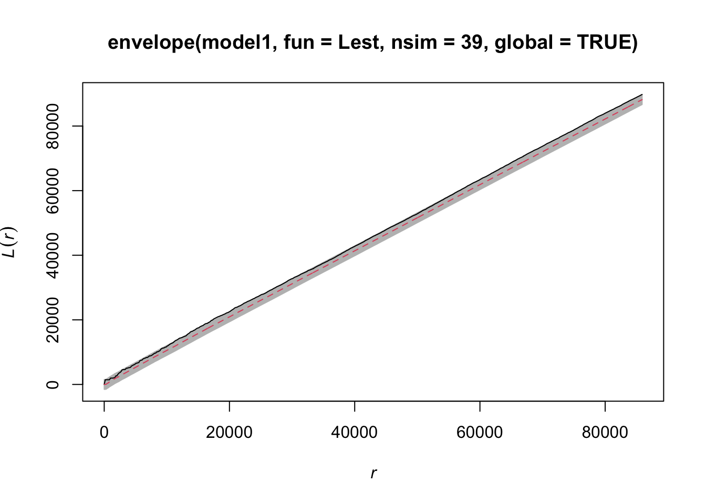
The model is shown in red with the 95% uncertainty bands.
model2 <- kppm(T.ppp25,
trend = ~ Zc + El + Tr,
covariates = list(Zc = Zc, El = El, Tr = Tr),
clusters = "Thomas")
model2## Inhomogeneous cluster point process model
## Fitted to point pattern dataset 'T.ppp25'
## Fitted by minimum contrast
## Summary statistic: inhomogeneous K-function
##
## Log intensity: ~Zc + El + Tr
##
## Fitted trend coefficients:
## (Intercept) Zc El Tr
## -1.863231e+01 -2.918036e-05 -6.657957e-04 -1.578727e-02
##
## Cluster model: Thomas process
## Fitted cluster parameters:
## kappa scale
## 1.456875e-09 1.358041e+04
## Mean cluster size: [pixel image]## Generating 78 simulated realisations of fitted cluster model (39 to estimate
## the mean and 39 to calculate envelopes) ...
## 1, 2, 3, 4, 5, 6, 7, 8, 9, 10, 11, 12, 13, 14, 15, 16, 17, 18, 19, 20, 21, 22, 23, 24, 25, 26, 27, 28, 29, 30, 31, 32, 33, 34, 35, 36, 37, 38, 39, 40,
## 41, 42, 43, 44, 45, 46, 47, 48, 49, 50, 51, 52, 53, 54, 55, 56, 57, 58, 59, 60, 61, 62, 63, 64, 65, 66, 67, 68, 69, 70, 71, 72, 73, 74, 75, 76, 77, 78.
##
## Done.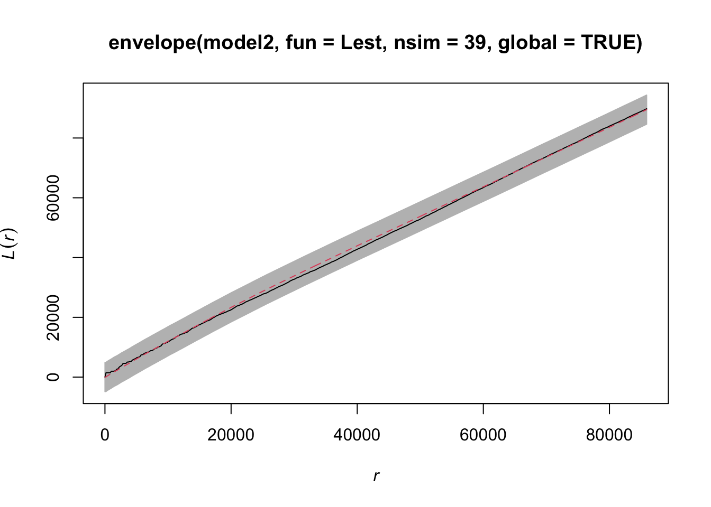
Simulate point patterns from the model.
## Generating 4 simulations... 1, 2, 3, 4.
## Done.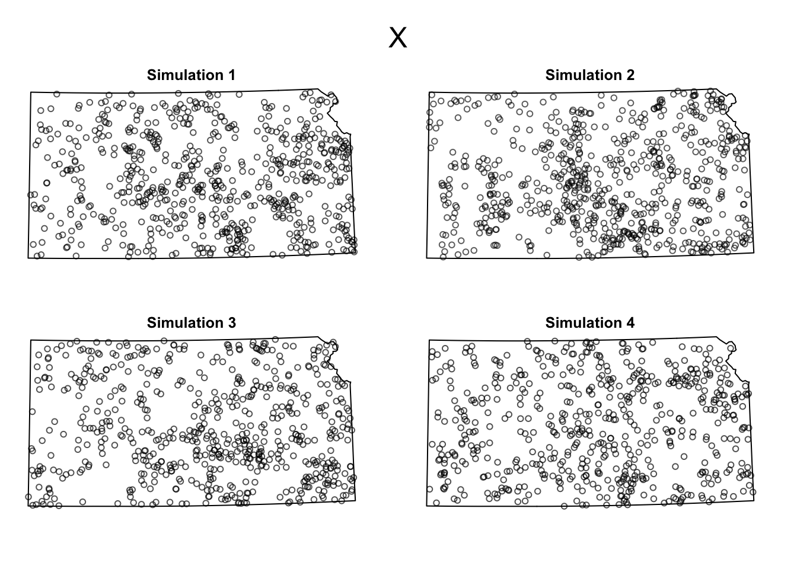
1.8 Spatial logistic regression
Spatial logistic regression is a popular model for point pattern data. The study domain is divided into a grid of cells; each cell is assigned the value one if it contains at least one event, and zero otherwise.
Then a logistic regression models the presence probability \(p = P(Y = 1)\) as a function of explanatory variables \(X\) in the (matrix) form \[ \log \frac{p}{1-p} = \beta X \] where the left-hand side is the logit (log of the odds ratio) and the \(\beta\) are the coefficients to be determined.
If your data are stored as ppp objects, a spatial logistic model can be fit directly using functions from the spatstat package.
Let’s consider a canned example from the package (a good strategy in general).
1.8.1 Example: Copper ore deposits
Consider the locations of 57 copper ore deposits (events) and 146 line segments representing geological ‘lineaments.’ Lineaments are linear features that consist of geological faults.
It is of interest to be able to predict the probability of a copper ore from the lineament pattern. The data are stored as a list in copper. The list contains a ppp object for the ore deposits and a psp object for the lineaments.
For convenience we first rotate the events (points and lines) by 90 degrees in the anticlockwise direction and save them as separate objects.
C <- spatstat::rotate(copper$SouthPoints, pi/2)
L <- spatstat::rotate(copper$SouthLines, pi/2)
plot(C)
plot(L, add = TRUE)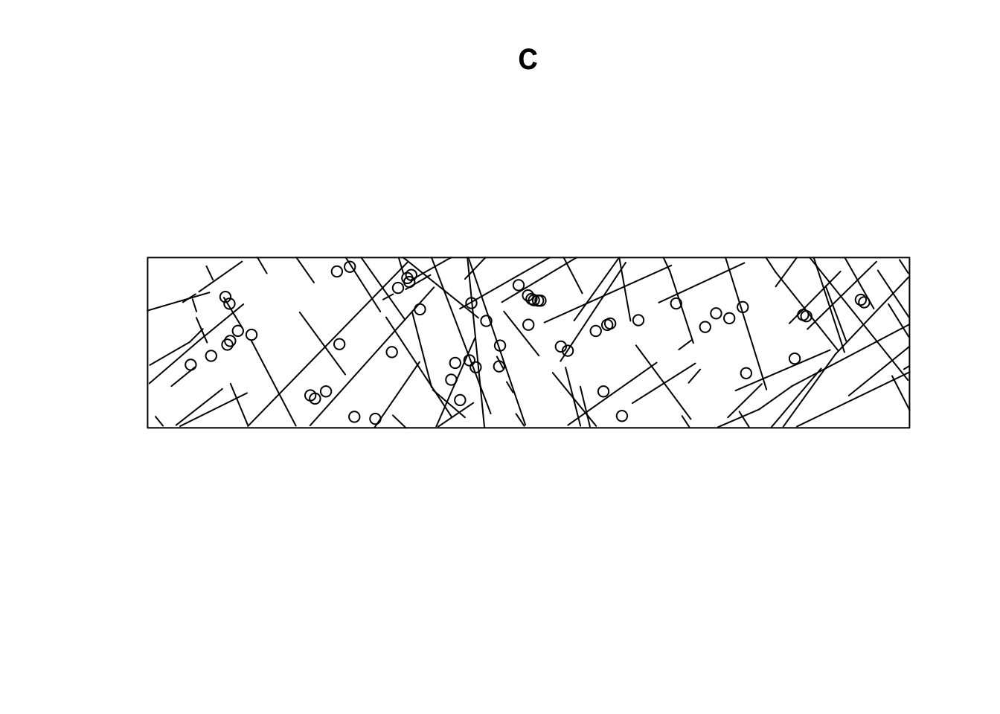
We summarize the planar point pattern C that we want to model.
## Planar point pattern: 57 points
## Average intensity 0.01020691 points per square km
##
## Coordinates are given to 2 decimal places
## i.e. rounded to the nearest multiple of 0.01 km
##
## Window: rectangle = [-158.233, -0.19] x [-0.335, 35] km
## (158 x 35.34 km)
## Window area = 5584.45 square km
## Unit of length: 1 kmThere are 57 ore deposits over a region of size 5584 square km resulting in an intensity of about .01 ore deposits per square km.
Next we create a distance map of the lineaments to be used as a covariate.

Models are fit with the slrm() function from the spatstat package.
## Fitted spatial logistic regression model
## Formula: C ~ D
## Fitted coefficients:
## (Intercept) D
## -4.72337865 0.07811134The model says that the odds of a copper ore along a lineament (D = 0) is exp(-4.723) = .00888. This is slightly less than the overall intensity of .01.
The model also says that for every one unit (one kilometer) increase in distance from a lineament the expected change in the log odds is .0781 [exp(.0781) = 1.0812] or an 8.1% increase in the odds. Ore deposits are more likely between the lineaments.
The fitted method produces an image (raster) of the window giving the local probability of an ore deposit. The values are the probability of a random ore deposit in each pixel.
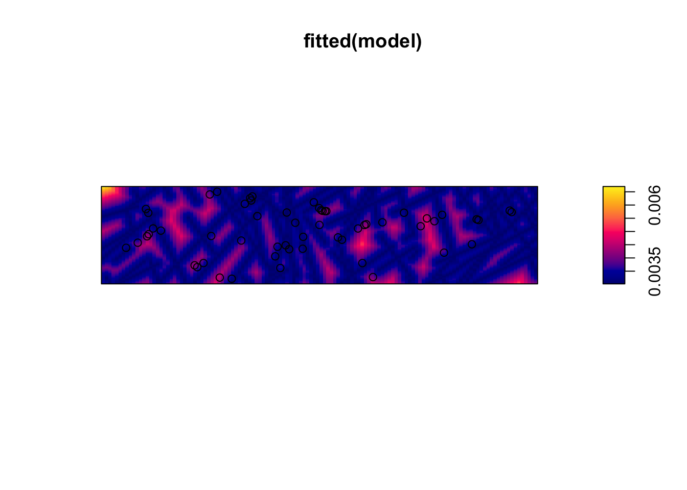
Integrating the predictions over the area equals the observed number of ore deposits.
## [1] 571.8.2 Challenge problem
Fit a spatial logistic regression model to the Kansas tornado data (T.ppp25) using distance to nearest city, terrain roughness, and elevation as explanatory variables. Use the argument eps = 10000 to specify 10-km-square pixels. Use the AIC() function to compare the model to a simpler model that has the elevation variable removed. What model is better? Plot the predictions from the better model as a probability raster with the actual tornado event locations overlayed.
1.9 Machine learning on spatial data
1.10 Problem Set #4
Create a planar point pattern object (
ppp) from the tornado reports (genesis points) across Oklahoma over the period 1950–2018 as the event locations. The data are in the shapefile1950-2018-torn-initpoint. Create anowinobject from the state border after projecting the border to an Albers equal area conic projection (EPSG:26975). (15)Rescale the units to kilometers. Estimate the annual tornado intensity per 100 square kilometers. (5)
Create a map showing the spatially varying intensity of tornadoes across the state. Overlay the event locations on the map. (10)
Create a planar point pattern object from the locations of cities and towns with populations exceeding 500. Use the cities data set from my website (see Lessons 13 & 14). Make a map showing the locations (20)
Plot the intensity of tornado reports as a function of distance from nearest town/city. Use an adjustment to the kernel bandwidth of 1.5. (10)
Using the tornado events compute and plot the nearest neighbor distance function. Test for clustering using a simulation envelope. Use 99 simulations. Describe the results. (10)
Create a multitype point pattern object by combining the tornado events with the town/city locations. Note: first remove the marks from the tornado point pattern data. Add “city” and “tornado” as factor marks to the multitype point pattern. Compute and plot Ripley’s K cross function and test for ‘interaction’ for distances less than 10 km. Use the
envelope()function to create 99 simulations. Provide an interpretation for the results. (30)